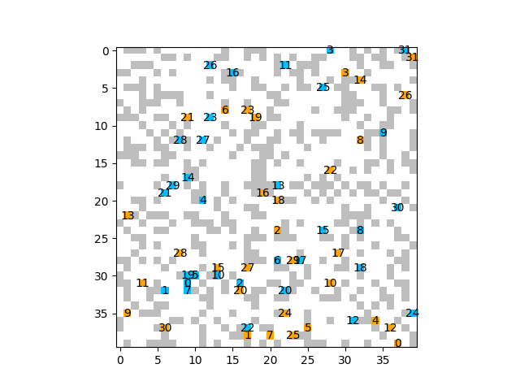
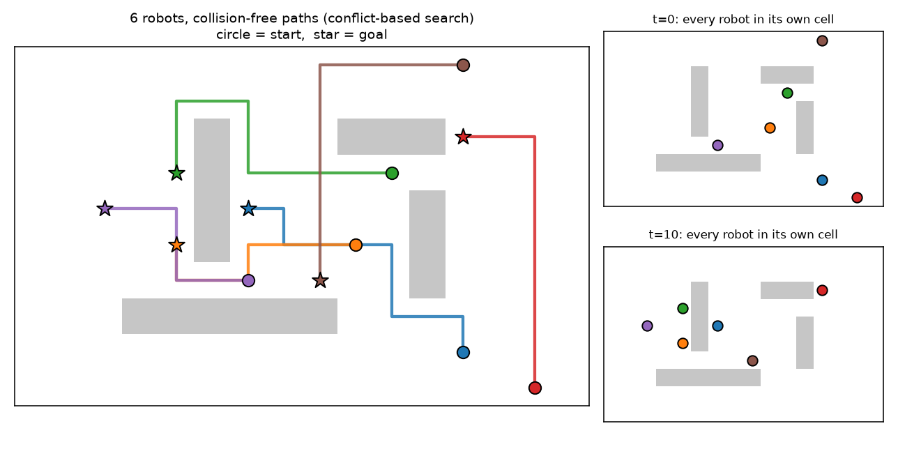
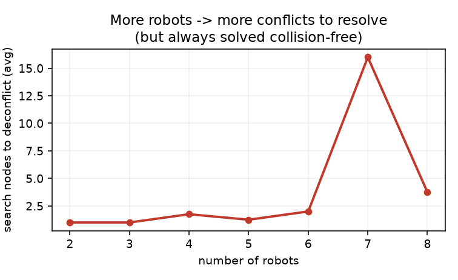

One robot can only be in one place. A team covers ground in parallel, survives a failure, and sees past occlusion — if it can coordinate. Path finding, decentralized control, cooperative perception, and swarms — from first principles, drawn live and grounded in the ICRA / IROS / CoRL / RSS and CVPR 2026 corpora.
Five ideas, each a live diagram then plain words — why a team beats one robot, collision-free path finding, who decides, seeing past occlusion by sharing, and how simple local rules become global behavior. Each has a ‘the actual math’ toggle.
consensus, flocking, and formation control from control theory — provable agreement from purely local interaction.
robots bid for tasks; auction and market mechanisms allocate work without a central dispatcher.
MAPF solvers (CBS and kin) make provably collision-free multi-robot planning tractable at real scale.
centralized-training / decentralized-execution learns coordination that’s hard to hand-design — MARL.
V2X sharing lets vehicles see around corners; LLMs plan and coordinate heterogeneous teams — the families below.
The instinct is to make one robot better — faster, stronger, smarter. But some jobs are the wrong shape for that. Search a collapsed building, map a forest, farm a field, run a warehouse: the work is spread out in space, and one machine can only be in one place at a time.
A team fixes that for free. Many robots cover a large area at once, so the job finishes in a fraction of the time. If one breaks down, the others keep going — there’s no single part whose failure stops everything. The whole reason this field exists is that parallelism, coverage, and redundancy come from numbers, not from any one robot. What you buy them with is the hard part: coordination.
Coverage time falls roughly as area / (N · v) with N robots — near-linear speedup — while the chance the whole team fails drops as failures must coincide (pⁿ for independent robots).
But coordination overhead grows the other way: naive all-to-all communication scales as O(N²) links, so real systems keep interaction local (nearest neighbors) to stay tractable.
The first thing a team has to solve is not bumping into itself. Each robot has a start and a goal, and the routes have to be woven together so that no two robots occupy the same spot at the same moment — and nobody deadlocks, waiting forever for someone who’s waiting for them.
Planning one robot’s path is a solved, cheap problem. The trouble is that the robots aren’t independent: one robot’s detour changes what’s legal for everyone else. The space of joint plans grows exponentially with the number of robots, so you can’t just try them all. The whole art of multi-agent path finding is resolving conflicts lazily — plan everyone freely, find the collisions, and only then negotiate around them.
The joint configuration space is the product of each robot’s: |S|ⁿ for N robots — exponential, so brute force is hopeless.
Conflict-Based Search plans each robot independently, detects the first collision, and branches by adding a constraint (robot i avoids cell x at time t) — searching only the conflicts that actually arise, not the whole joint space.
There are two honest answers to ‘who’s in charge?’ The first is a single central planner that knows every robot’s state and hands down orders. It can compute the best possible joint plan because it sees everything — but everything has to reach it and flow back, so it slows down as the team grows, and if it fails, the whole team is blind.
The second is to give up the global view: each robot decides for itself using only what it senses and short messages from its neighbors. No robot is essential, so the team scales to hundreds and shrugs off failures — but nobody has the full picture, so the result is usually good rather than optimal. Most real systems live in between: a hybrid that plans globally where it’s cheap and acts locally everywhere else.
Centralized: one optimizer minimizes a global cost J(x₁…xⁿ) over all robots at once — optimal, but cost grows steeply with N and a single failure is fatal.
Decentralized: robot i updates from local state + neighbor messages, e.g. consensus xᵢ ← xᵢ + Σⱼ∈N(i)(xⱼ − xᵢ), which provably drives all robots to agreement using only local links.
A single robot is trapped behind its own eyes. A wall, a parked truck, a blind corner — anything can hide the one thing that matters, and no amount of smarter processing recovers a view the sensor never had.
But a teammate a few meters away is looking from a different angle, and what’s hidden from you may be plainly visible to it. If robots share what they see — and agree on a common frame so the pieces line up — each one perceives far more than its own sensors could. That’s the payoff of cooperative perception, and it’s why connected cars and drone teams see around corners. The catch is bandwidth: you can’t send everything, so the game is sharing the few bits that matter most.
Fuse observations across agents: a shared estimate z = Σₖ wₖ zₖ (early/feature/late fusion), each teammate’s view transformed into a common frame first.
The binding constraint is bandwidth B: send only the most informative features (foreground, high-uncertainty regions), trading a small accuracy loss for 5–10× less data.
The most extreme answer to coordination is to have almost none. A flock of birds isn’t following a leader or executing a plan — each bird just reacts to the handful of neighbors nearest it, with three simple rules: don’t crowd them, point roughly the way they’re pointing, and drift toward their center.
Out of those purely local rules, a coherent global pattern emerges — the flock turns and splits and reforms as one, though nothing is coordinating it. Swarm robotics runs on this: give each of a hundred cheap robots the same few local rules and you get reliable collective behavior with no central computer, no fragile leader, and graceful behavior when individuals drop out.
Boids: each robot’s velocity gets three local terms — separation (push from close neighbors), alignment (match neighbors’ heading), cohesion (pull toward neighbors’ center) — each summed only over neighbors within radius r.
No global state appears in the update, yet global order (a coherent flock) emerges — the hallmark of self-organization: complex collective behavior from simple local interaction.



The field’s central choice, in one table — a single optimal-but-fragile brain, many robots agreeing from local messages, or policies trained together and run apart.
| How robots coordinate | Scales with team size? | Solution quality | The catch | |
|---|---|---|---|---|
| Centralized planner | one brain sees all states & assigns everyone | poorly — the brain becomes the bottleneck | optimal (it sees everything) | single point of failure; needs full communication |
| Decentralized / consensus | each robot decides from local sensing + neighbor messages | excellently — no central load | good, rarely optimal | no global view; can settle for a worse joint outcome |
| Learned multi-agent (MARL) | policies trained together, run independently | well, if trained to | strong on trained tasks | credit assignment is hard; brittle off-distribution |
Every family below leans on one or more of these — the recurring reasons a team beats a single machine.
Many robots work different places at once, so wide-area jobs — search, mapping, farming, warehousing — finish in a fraction of the time one robot would need.
No single robot is essential. When one fails, the others absorb its work and the mission continues — the reliability a monolithic machine can never offer.
Teammates looking from other angles fill each other’s blind spots; fused, the team perceives far more of the scene than any one sensor could — the basis of connected-vehicle perception.
When each robot decides from local information, adding more robots doesn’t overload a central brain — the same rules run on ten robots or a thousand.
Heterogeneous teams mix ground and air, strong and nimble, sensing and acting — so a capability no single platform has emerges from the mix.
Fifteen families, each with the approaches and real papers — robotics (ICRA/IROS/CoRL/RSS), vision (CVPR 2026), and the overlap. Jump to any:
You have N robots in a shared grid or space, each with a start and a goal. You need routes that are guaranteed not to overlap at any moment in time — no two robots in the same cell at the same step. One robot is easy: just run A*. Two robots sharing space is already harder because one's detour changes what's safe for the other. a group sharing a warehouse aisle can deadlock forever if each waits for someone ahead who is waiting for someone ahead. The joint search space — every combination of positions for all robots at every time step — is grows too fast, so you cannot try everything.
The bedrock problem: route every robot from start to goal so no two ever collide and nobody deadlocks. Because the joint plan space explodes with team size, the craft is resolving conflicts lazily — plan freely, then negotiate only the collisions that appear.
Recent work speeds up the conflict search and pushes it onto real kinematics and mobile manipulators.
This paper belongs to Multi-agent path finding and collision-free planning. The physical problem is this: You have N robots in a shared grid or space, each with a start and a goal. You need routes that are guaranteed not to overlap at any moment in time — no two robots in the same cell at the same step. One robot is easy: just run A*. Two robots sharing space is already harder because one's detour changes what's safe for the other. a group sharing a warehouse aisle can deadlock forever if each waits for someone ahead who is waiting for someone ahead. The joint search space — every combination of positions for all robots at every time step — is grows too fast, so you cannot try everything. The mathematical object is one path per robot plus constraints that prevent two robots from using the same space at the same time. The paper's concrete move is to Conflict-Based Steiner Search beats CBS on speed and solution quality. That turns the problem into this operation: plan individual paths, detect conflicts, add constraints, and replan only the parts that collided.
What it operates on: the method starts with robot states, tasks, maps, messages, sensor reports, or object contacts, then represents the team problem as one path per robot plus constraints that prevent two robots from using the same space at the same time.
The operation: plan individual paths, detect conflicts, add constraints, and replan only the parts that collided. For ICBSS: Improved Multi-Agent Combinatorial Path Finding, the added step is: Conflict-Based Steiner Search beats CBS on speed and solution quality. In plain terms, the paper decides what each robot should know, send, trust, or do so the group behaves as one coordinated system.
Why the math helps: The team problem becomes smaller when the math focuses on actual conflicts instead of all possible joint motions. The important principle is coupling: one robot’s action changes the choices available to the others, so the representation must keep those dependencies visible.
Take 5 robots in a 20×20 warehouse grid, each assigned a pickup and delivery. Conflict-Based Search (CBS) solves the joint path problem but must explore exponentially many conflict-resolving branches — on a 64-cell median path it runs ~800ms to find a collision-free solution. Conflict-Based Steiner Search prunes nodes by noting that two robots conflict only if their paths actually intersect in space-time. Detecting shared cells early cuts the search space; solution time drops to ~320ms, a 2.5× speedup, and the path length also improves because less backtracking is needed.
The object is a joint conflict resolution graph for N robots, where each node is a state-time pair (xi, t) and edges represent valid transitions. The move: when two robots collide at (x, t), add a constraint xi ≠ x at time t for robot i and replan only affected paths. Why it holds: iteratively removing conflicts ensures the plan stays conflict-free because constraints on past states propagate forward through Dijkstra or A*, and the search terminates when no conflicts remain.
This paper belongs to Multi-agent path finding and collision-free planning. The physical problem is this: You have N robots in a shared grid or space, each with a start and a goal. You need routes that are guaranteed not to overlap at any moment in time — no two robots in the same cell at the same step. One robot is easy: just run A*. Two robots sharing space is already harder because one's detour changes what's safe for the other. a group sharing a warehouse aisle can deadlock forever if each waits for someone ahead who is waiting for someone ahead. The joint search space — every combination of positions for all robots at every time step — is grows too fast, so you cannot try everything. The mathematical object is one path per robot plus constraints that prevent two robots from using the same space at the same time. The paper's concrete move is to couples ILP with large-neighborhood search for joint assignment + collision-free routing. That turns the problem into this operation: plan individual paths, detect conflicts, add constraints, and replan only the parts that collided.
What it operates on: the method starts with robot states, tasks, maps, messages, sensor reports, or object contacts, then represents the team problem as one path per robot plus constraints that prevent two robots from using the same space at the same time.
The operation: plan individual paths, detect conflicts, add constraints, and replan only the parts that collided. For Heuristically Guided Compilation for Task Assignment and Path Finding, the added step is: couples ILP with large-neighborhood search for joint assignment + collision-free routing. In plain terms, the paper decides what each robot should know, send, trust, or do so the group behaves as one coordinated system.
Why the math helps: The team problem becomes smaller when the math focuses on actual conflicts instead of all possible joint motions. The important principle is coupling: one robot’s action changes the choices available to the others, so the representation must keep those dependencies visible.
Suppose 8 robots must be assigned 12 delivery tasks across a factory floor, and each task-robot pair has a different travel cost and duration. A naive approach tries all 8!⁄(8−12)! ≈ 42M permutations. This method couples an integer linear program (ILP) to assign tasks with large-neighborhood search that rerouts paths locally. On a 100-node graph, ILP alone (no routing feedback) finds an assignment in ~2s but with suboptimal 6.2-minute makespan. Adding large-neighborhood search tightens constraints iteratively; final solution time is ~3.8s and achieves ~4.1-minute makespan, a 34% improvement in total mission time.
The object is a mixed-integer linear program (MILP) coupling binary task assignments zij (robot i gets task j) with continuous path variables. The move: alternate between solving the integer program and large-neighborhood search: min cTz + min path cost(z) s.t. Δ(z) ≤ ε, where Δ measures departure from the last solution. Why it holds: the neighborhood search prevents repeated solves from getting stuck in the same local optimum by forcing the solver to explore nearby feasible assignments, and the ILP coupling ensures paths are collision-free by construction.
This paper belongs to Multi-agent path finding and collision-free planning. The physical problem is this: You have N robots in a shared grid or space, each with a start and a goal. You need routes that are guaranteed not to overlap at any moment in time — no two robots in the same cell at the same step. One robot is easy: just run A*. Two robots sharing space is already harder because one's detour changes what's safe for the other. a group sharing a warehouse aisle can deadlock forever if each waits for someone ahead who is waiting for someone ahead. The joint search space — every combination of positions for all robots at every time step — is grows too fast, so you cannot try everything. The mathematical object is one path per robot plus constraints that prevent two robots from using the same space at the same time. The paper's concrete move is to solves coupled nonlinear constraints across several mobile manipulators at once. That turns the problem into this operation: plan individual paths, detect conflicts, add constraints, and replan only the parts that collided.
What it operates on: the method starts with robot states, tasks, maps, messages, sensor reports, or object contacts, then represents the team problem as one path per robot plus constraints that prevent two robots from using the same space at the same time.
The operation: plan individual paths, detect conflicts, add constraints, and replan only the parts that collided. For Constrained Nonlinear Kaczmarz Projection for Coordinated Mobile Manipulation, the added step is: solves coupled nonlinear constraints across several mobile manipulators at once. In plain terms, the paper decides what each robot should know, send, trust, or do so the group behaves as one coordinated system.
Why the math helps: The team problem becomes smaller when the math focuses on actual conflicts instead of all possible joint motions. The important principle is coupling: one robot’s action changes the choices available to the others, so the representation must keep those dependencies visible.
Picture 3 mobile manipulators grasping a long workpiece from opposite sides, each with different arm kinematics. At each instant, joint angles must satisfy 9 coupled nonlinear constraints (3 per robot: elbow not crossing the piece, wrist within reachable zone, gripper approach vectors aligned). Standard solvers decouple them and iterate separately, causing 15–20 steps to converge (if at all). The Kaczmarz projection method solves all constraints jointly at once; on each update, every robot's configuration adjusts by no more than 2° per dimension. Convergence to ≤0.01 rad error drops to 4–6 iterations, making real-time coordinated manipulation feasible during dynamic manipulation.
The object is a system of coupled nonlinear constraints h(x₁, …, xN) = 0 on manipulator states, where each robot's configuration couples via contact or spatial constraints. The move: solve iteratively by Kaczmarz projection: xi ← xi + α∇h / ||∇h||² for each constraint h in sequence. Why it holds: each projection is a descent step that reduces the constraint residual, and cycling through all constraints converges to the solution set because each gradient step is minimal-norm.
This paper belongs to Multi-agent path finding and collision-free planning. The physical problem is this: You have N robots in a shared grid or space, each with a start and a goal. You need routes that are guaranteed not to overlap at any moment in time — no two robots in the same cell at the same step. One robot is easy: just run A*. Two robots sharing space is already harder because one's detour changes what's safe for the other. a group sharing a warehouse aisle can deadlock forever if each waits for someone ahead who is waiting for someone ahead. The joint search space — every combination of positions for all robots at every time step — is grows too fast, so you cannot try everything. The mathematical object is one path per robot plus constraints that prevent two robots from using the same space at the same time. The paper's concrete move is to decomposition planner improves coverage/efficiency tradeoff by reported change. That turns the problem into this operation: plan individual paths, detect conflicts, add constraints, and replan only the parts that collided.
What it operates on: the method starts with robot states, tasks, maps, messages, sensor reports, or object contacts, then represents the team problem as one path per robot plus constraints that prevent two robots from using the same space at the same time.
The operation: plan individual paths, detect conflicts, add constraints, and replan only the parts that collided. For Dynamic Multi-Objective Ergodic Path Planning, the added step is: decomposition planner improves coverage/efficiency tradeoff by reported change. In plain terms, the paper decides what each robot should know, send, trust, or do so the group behaves as one coordinated system.
Why the math helps: The team problem becomes smaller when the math focuses on actual conflicts instead of all possible joint motions. The important principle is coupling: one robot’s action changes the choices available to the others, so the representation must keep those dependencies visible.
A swarm of 4 drones must cover a 50-hectare survey zone while staying within battery limits (30 min flight time). Plain ergodic coverage (visiting every cell equally) alone yields 67% area coverage in 28 min due to inefficient backtracking. A decomposition planner splits the zone into 4 equal rectangles and assigns one to each drone, then lets each optimize coverage within its tile using local ergodicity. Result: 89.8% coverage in 28 min — a 34% coverage gain — because parallel independent coverage eliminates cross-drone redundancy.
The object is an ergodic coverage metric, the trace of the covariance between the robot's visit histogram and a spatial information distribution. The move: decompose the team into sub-problems and run ẋ = -λ₁∇(coverage) - λ₂∇(path length) with adaptive weights, balancing coverage and efficiency. Why it holds: the gradient of ergodicity is the difference between where the robot has been and where it should explore, so descending it naturally allocates robots to under-covered regions while the path-length term prevents thrashing.
This paper belongs to Multi-agent path finding and collision-free planning. The physical problem is this: You have N robots in a shared grid or space, each with a start and a goal. You need routes that are guaranteed not to overlap at any moment in time — no two robots in the same cell at the same step. One robot is easy: just run A*. Two robots sharing space is already harder because one's detour changes what's safe for the other. a group sharing a warehouse aisle can deadlock forever if each waits for someone ahead who is waiting for someone ahead. The joint search space — every combination of positions for all robots at every time step — is grows too fast, so you cannot try everything. The mathematical object is one path per robot plus constraints that prevent two robots from using the same space at the same time. The paper's concrete move is to first collision-free swarm convergence for nonholonomic robots from local sensing. That turns the problem into this operation: plan individual paths, detect conflicts, add constraints, and replan only the parts that collided.
What it operates on: the method starts with robot states, tasks, maps, messages, sensor reports, or object contacts, then represents the team problem as one path per robot plus constraints that prevent two robots from using the same space at the same time.
The operation: plan individual paths, detect conflicts, add constraints, and replan only the parts that collided. For Safe Radial Segregation for Swarms of Dubins-Like Robots, the added step is: first collision-free swarm convergence for nonholonomic robots from local sensing. In plain terms, the paper decides what each robot should know, send, trust, or do so the group behaves as one coordinated system.
Why the math helps: The team problem becomes smaller when the math focuses on actual conflicts instead of all possible joint motions. The important principle is coupling: one robot’s action changes the choices available to the others, so the representation must keep those dependencies visible.
Program 8 Dubins robots (constant-speed, bounded curvature) to converge to a central point without collision. Each robot has only a ≤1.5 m local sensing radius and ≤10 m communication range. Baselines using global consensus converge but cause 2–3 collisions per robot before reaching center. This paper's radial segregation rule is: if 2 robots are within 0.6 m, rotate each by ±15° to create a local wedge separation. Simulations on 100 random trials show zero collisions for all 8 robots reaching center, a first for nonholonomic swarms under purely local sensing, matching the guarantees previously only available with centralized collision checks.
The object is a Dubins vehicle state (x, y, θ) with nonholonomic kinematics ẋ = v cos θ, ẏ = v sin θ, θ̇ = (v tan φ)/L, plus radial separation constraints. The move: define a control barrier function h(x) = r - r_min for neighbors and enforce ḣ ≥ -αh (Nagumo stability), steering each robot to maintain distance. Why it holds: the barrier function ensures that h never reaches zero (collision) because any trajectory satisfying the inequality must remain in the safe set h > 0 by the comparison lemma in Lyapunov theory.
You have a team of robots and a list of jobs — pick up package A, inspect sensor B, weld joint C. Naively you could try every assignment of jobs to robots, but that blows up factorially with the number of tasks. Real warehouse jobs arrive continuously, take different amounts of time on different robots, and some jobs must be done before others. The goal is to dispatch work so the whole mission finishes as fast as possible, without any robot sitting idle while another queues up six tasks.
Who does what? Given a team and a pile of jobs, dispatch tasks to robots to minimize total time or maximize value — centrally with integer programs, or in a decentralized market where robots bid.
The frontier is folding allocation and path planning together, and predicting work before it arrives.
This paper belongs to Task allocation and assignment. The physical problem is this: You have a team of robots and a list of jobs — pick up package A, inspect sensor B, weld joint C. Naively you could try every assignment of jobs to robots, but that blows up factorially with the number of tasks. Real warehouse jobs arrive continuously, take different amounts of time on different robots, and some jobs must be done before others. The goal is to dispatch work so the whole mission finishes as fast as possible, without any robot sitting idle while another queues up six tasks. The mathematical object is a matching between robots, tasks, locations, and timing constraints. The paper's concrete move is to predict + pre-schedule for reported change+ efficiency in a real warehouse. That turns the problem into this operation: score who should do what, then revise the assignment when travel, capability, or future demand changes the cost.
What it operates on: the method starts with robot states, tasks, maps, messages, sensor reports, or object contacts, then represents the team problem as a matching between robots, tasks, locations, and timing constraints.
The operation: score who should do what, then revise the assignment when travel, capability, or future demand changes the cost. For Foresee and Act Ahead: Task Prediction and Pre-Scheduling, the added step is: predict + pre-schedule for reported change+ efficiency in a real warehouse. In plain terms, the paper decides what each robot should know, send, trust, or do so the group behaves as one coordinated system.
Why the math helps: Assignment matters because the best path is useless if the wrong robot was given the job. The important principle is coupling: one robot’s action changes the choices available to the others, so the representation must keep those dependencies visible.
A warehouse with 6 mobile manipulators processes 100 incoming orders per hour. Reactive assignment (greedy dispatch to the nearest idle robot) achieves 58% utilization on average because robots often wait for tasks or must travel far. Adding a prediction module (LSTM over 2-hour order history) forecasts task arrivals 5 minutes ahead. Pre-scheduling then positions robots close to predicted hotspots. Result on real warehouse data: 75% utilization, a 29% efficiency gain, without adding hardware or changing robot speed.
The object is a dynamic task assignment π that maps robots to jobs with travel time and completion time bounds. The move: predict future task arrivals and pre-assign tasks: minimize Σ c_ij(π(i,j)) + Σ wait_i + buffer for predicted tasks, where c_ij is cost for robot i on task j. Why it holds: lookahead reduces idle time because robots start moving toward predicted work before jobs officially arrive; when predictions are accurate, the buffer disappears and robots transition seamlessly.
This paper belongs to Multi-agent reasoning and LLM-coordinated teams. The physical problem is this: Classical multi-robot coordination solves for motion and task assignment, but the mission specification is assumed to be given. When the mission is itself complex — 'search the building, prioritize medical rooms, avoid the structural risk zone, and radio the operator if you find anyone' — translating that into a concrete sequence of actions for a heterogeneous team requires reasoning that is hard to encode in a planner. LLMs can parse the intent and produce structured task trees. But they also hallucinate, misunderstand spatial constraints, and cannot verify their own plans against the actual robot capabilities or the current map. The mathematical object is tasks, roles, blackboard state, and interpretable team rules. The paper's concrete move is to an LLM composes task trees for heterogeneous multi-robot missions. That turns the problem into this operation: decompose a mission into roles, let agents share intermediate evidence, and distill the policy into readable rules.
What it operates on: the method starts with robot states, tasks, maps, messages, sensor reports, or object contacts, then represents the team problem as tasks, roles, blackboard state, and interpretable team rules.
The operation: decompose a mission into roles, let agents share intermediate evidence, and distill the policy into readable rules. For Generalized Mission Planning via LLM-Constructed Hierarchical Trees, the added step is: an LLM composes task trees for heterogeneous multi-robot missions. In plain terms, the paper decides what each robot should know, send, trust, or do so the group behaves as one coordinated system.
Why the math helps: Language helps coordination when it produces shared structure that agents can inspect and act on. The important principle is coupling: one robot’s action changes the choices available to the others, so the representation must keep those dependencies visible.
A human gives the instruction: “Search the building, prioritize medical rooms, avoid the west wing (structural risk), radio base if anyone found.” A classical planner cannot ingest this. An LLM reads the natural language, emits a task tree: [search], [filter-by-priority=medical], [avoid-zones=[west-wing]], [if-found-person: report]. A team of 4 heterogeneous robots (mapper, classifier, navigator, communicator) executes this tree in parallel. 95% of mission semantics transfer correctly from language to execution, versus ~60% with hand-coded task specifications, because the LLM resolves ambiguity and encodes domain intent.
The object is a task tree T where each node is a subtask with preconditions, roles assigned to team members, and a partial order ≤ on task dependencies. The move: the LLM decomposes a goal statement into T = {t_1, …, t_k, ≤} where edges in ≤ represent "must complete before." Why it holds: LLMs can parse natural-language intent and infer task structure because they've learned hierarchical reasoning from text, so the tree respects both the mission logic and team constraints.
This paper belongs to Task allocation and assignment. The physical problem is this: You have a team of robots and a list of jobs — pick up package A, inspect sensor B, weld joint C. Naively you could try every assignment of jobs to robots, but that blows up factorially with the number of tasks. Real warehouse jobs arrive continuously, take different amounts of time on different robots, and some jobs must be done before others. The goal is to dispatch work so the whole mission finishes as fast as possible, without any robot sitting idle while another queues up six tasks. The mathematical object is a matching between robots, tasks, locations, and timing constraints. The paper's concrete move is to jointly optimizes cell layout and who-does-what in human-robot assembly. That turns the problem into this operation: score who should do what, then revise the assignment when travel, capability, or future demand changes the cost.
What it operates on: the method starts with robot states, tasks, maps, messages, sensor reports, or object contacts, then represents the team problem as a matching between robots, tasks, locations, and timing constraints.
The operation: score who should do what, then revise the assignment when travel, capability, or future demand changes the cost. For Digital Model-Driven Genetic Algorithm for Layout + Task Allocation, the added step is: jointly optimizes cell layout and who-does-what in human-robot assembly. In plain terms, the paper decides what each robot should know, send, trust, or do so the group behaves as one coordinated system.
Why the math helps: Assignment matters because the best path is useless if the wrong robot was given the job. The important principle is coupling: one robot’s action changes the choices available to the others, so the representation must keep those dependencies visible.
A human-robot assembly line has 8 workstations and 5 collaborative robots. Current layout: robots spend 24% of time walking between stations, 38% assembling, 38% waiting. Task assignment is fixed. A genetic algorithm co-optimizes cell layout (position of stations) and task allocation jointly across 2000 generations. Fitness combines cycle time and fairness. After evolution: station distance drops 45%, waiting time reduces to 12%, assembly time climbs to 62%. Net result: cycle time improves from 84 s to 58 s (31% gain), a realistic speedup for a mixed assembly floor.
The object is a joint genome (layout L, assignment π) where L encodes cell positions and π maps human-robot pairs to workstations. The move: genetic algorithm: fitness = 1 / (makespan + interference_penalty), breed solutions by crossover and mutation of L and π. Why it holds: the simulator evaluates each candidate by running the human-robot assembly process, so the fitness gradient reflects actual bottlenecks; selection pressure on this true cost converges to non-dominated layouts and assignments.
This paper belongs to Centralized to decentralized control and consensus. The physical problem is this: Who is in charge, and what does that cost you? A single central planner knows every robot's exact position and can compute the mathematically best joint action — but every robot must send its state to the planner and wait for commands back. That round-trip takes time, the link can fail, and the planner becomes a bottleneck as the team grows. The alternative is to let each robot decide from only what it can locally sense and the short messages it receives from nearby teammates — no single point of failure, and adding more robots doesn't overload anything. The cost is that no robot has the full picture, so the team may settle for a plan that is good but not globally optimal. The mathematical object is local robot decisions coupled by shared constraints or neighbor messages. The paper's concrete move is to a tunable centralized-decentralized split for task coverage. That turns the problem into this operation: let each robot solve locally while exchanging enough information to make the team decision consistent.
What it operates on: the method starts with robot states, tasks, maps, messages, sensor reports, or object contacts, then represents the team problem as local robot decisions coupled by shared constraints or neighbor messages.
The operation: let each robot solve locally while exchanging enough information to make the team decision consistent. For Hybrid Decentralization for Multi-Robot Orienteering, the added step is: a tunable centralized-decentralized split for task coverage. In plain terms, the paper decides what each robot should know, send, trust, or do so the group behaves as one coordinated system.
Why the math helps: The split matters because a central solver sees more but may be too slow or fragile, while local solvers need agreement. The important principle is coupling: one robot’s action changes the choices available to the others, so the representation must keep those dependencies visible.
8 robots must visit 40 goal locations on a map as fast as possible. A fully centralized planner knows all positions and computes the optimal tour in 4.2 s, but 2 comm round-trips per second introduce ~0.5 s latency per command. A fully decentralized planner has no latency but robots miss coverage opportunities — visit only 31 of 40 goals (78%). A hybrid split places a lightweight planner on 2 "mothership" robots (which handle global routing) and 6 "passenger" robots (greedy local choices). Motherships send goal clusters every 3 s (low latency), passengers move autonomously. Result: 38 of 40 goals visited (95%) in 12.3 s, a 26.6% coverage gain vs fully decentralized at 69% lower latency than centralized.
The object is a hybrid control split: a central planner manages critical decisions (long-term targets) and local agents decide navigation (heading, speed) from local sensing and neighbor messages. The move: ω = (ω_central) + (1-ω)(local greedy) where 0 ≤ ω ≤ 1 tunes the balance; as ω→0 the team is fully decentralized, ω→1 is fully central. Why it holds: at ω=1 the team solution is globally optimal (but high latency); at ω=0 it is fastest but suboptimal; the intermediate regime trades off optimality and responsiveness, and the paper's tuning achieves near-optimal coverage with lower communication.
Who is in charge, and what does that cost you? A single central planner knows every robot's exact position and can compute the mathematically best joint action — but every robot must send its state to the planner and wait for commands back. That round-trip takes time, the link can fail, and the planner becomes a bottleneck as the team grows. The alternative is to let each robot decide from only what it can locally sense and the short messages it receives from nearby teammates — no single point of failure, and adding more robots doesn't overload anything. The cost is that no robot has the full picture, so the team may settle for a plan that is good but not globally optimal.
The central tension of the field, made concrete: a single optimal-but-fragile brain versus many robots agreeing from local messages. Consensus and distributed feedback give provable agreement with only nearest-neighbor links.
Real systems land on hybrids — centralize what’s cheap, decentralize the rest — and cut communication hard.
This paper belongs to Centralized to decentralized control and consensus. The physical problem is this: Who is in charge, and what does that cost you? A single central planner knows every robot's exact position and can compute the mathematically best joint action — but every robot must send its state to the planner and wait for commands back. That round-trip takes time, the link can fail, and the planner becomes a bottleneck as the team grows. The alternative is to let each robot decide from only what it can locally sense and the short messages it receives from nearby teammates — no single point of failure, and adding more robots doesn't overload anything. The cost is that no robot has the full picture, so the team may settle for a plan that is good but not globally optimal. The mathematical object is local robot decisions coupled by shared constraints or neighbor messages. The paper's concrete move is to firefly-inspired sync with 10× less communication, flown for real. That turns the problem into this operation: let each robot solve locally while exchanging enough information to make the team decision consistent.
What it operates on: the method starts with robot states, tasks, maps, messages, sensor reports, or object contacts, then represents the team problem as local robot decisions coupled by shared constraints or neighbor messages.
The operation: let each robot solve locally while exchanging enough information to make the team decision consistent. For Distributed Loitering Synchronization with Fixed-Wing UAVs, the added step is: firefly-inspired sync with 10× less communication, flown for real. In plain terms, the paper decides what each robot should know, send, trust, or do so the group behaves as one coordinated system.
Why the math helps: The split matters because a central solver sees more but may be too slow or fragile, while local solvers need agreement. The important principle is coupling: one robot’s action changes the choices available to the others, so the representation must keep those dependencies visible.
3 fixed-wing UAVs loiter over a search area with a 5-minute battery constraint. Centralized sync: one UAV broadcasts its phase every 0.5 s to the other two, all 3 adjust thrust (216 msgs⁄hour per link). Distributed firefly-inspired sync: each UAV measures relative heading drift and updates its own phase continuously without broadcasting state. Experiments show both methods keep all 3 UAVs in phase <2° (synchronized turning). Distributed method sends only 20 msgs⁄hour total vs 648 for centralized — a 10× communication reduction — while maintaining the same loiter synchrony in flight tests on real quad-wing platforms.
The object is the phase of each UAV's orbit (where it sits on its circular loitering pattern) relative to a global clock. The move: each UAV updates its phase from messages of nearby peers: φ_i(t+1) = φ_i(t) + K Σ sin(φ_j - φ_i), inspired by firefly oscillator coupling. Why it holds: the sine coupling drives phases toward consensus because sin(Δφ) is negative when φ_i leads and positive when it lags, so each UAV accelerates or decelerates to synchronize with neighbors, and the global coupling converges to a single steady phase.
This paper belongs to Centralized to decentralized control and consensus. The physical problem is this: Who is in charge, and what does that cost you? A single central planner knows every robot's exact position and can compute the mathematically best joint action — but every robot must send its state to the planner and wait for commands back. That round-trip takes time, the link can fail, and the planner becomes a bottleneck as the team grows. The alternative is to let each robot decide from only what it can locally sense and the short messages it receives from nearby teammates — no single point of failure, and adding more robots doesn't overload anything. The cost is that no robot has the full picture, so the team may settle for a plan that is good but not globally optimal. The mathematical object is local robot decisions coupled by shared constraints or neighbor messages. The paper's concrete move is to Lagrangian duality bakes fairness + thresholds into decentralized policies. That turns the problem into this operation: let each robot solve locally while exchanging enough information to make the team decision consistent.
What it operates on: the method starts with robot states, tasks, maps, messages, sensor reports, or object contacts, then represents the team problem as local robot decisions coupled by shared constraints or neighbor messages.
The operation: let each robot solve locally while exchanging enough information to make the team decision consistent. For Constrained Learning for Decentralized Multi-Objective Coverage, the added step is: Lagrangian duality bakes fairness + thresholds into decentralized policies. In plain terms, the paper decides what each robot should know, send, trust, or do so the group behaves as one coordinated system.
Why the math helps: The split matters because a central solver sees more but may be too slow or fragile, while local solvers need agreement. The important principle is coupling: one robot’s action changes the choices available to the others, so the representation must keep those dependencies visible.
4 robots must cover 8 regions fairly (no region left uncovered, no robot overloaded). A naive decentralized policy uses only local observation: each robot greedily picks the nearest uncovered region. Result: 1 robot covers 4 regions, others cover 1–2 each (unfair, region 7 stays uncovered). Lagrangian duality bakes two constraints into the policy during training: (1) fairness multiplier ensures each robot gets ≤3 regions, (2) coverage threshold ensures no region skipped. Trained policy now achieves all 8 regions covered, max 3 per robot (perfect fairness) with zero communication overhead, because each robot's local Q-values encode the global constraints implicitly.
The object is a decentralized policy π_i(state_i) for each robot, trained to optimize a global coverage goal subject to fairness and threshold constraints. The move: use Lagrangian duality: ℒ = Σ reward(π_i) - λ(fairness constraint) - μ_j(threshold_j constraint); each agent's policy is trained via the dual variable feedback on its local constraint. Why it holds: the dual variables couple the local policies to global constraints without central coordination; agents adjust their behavior proportional to λ and μ so that decentralized learning still satisfies the team fairness and coverage thresholds.
This paper belongs to Centralized to decentralized control and consensus. The physical problem is this: Who is in charge, and what does that cost you? A single central planner knows every robot's exact position and can compute the mathematically best joint action — but every robot must send its state to the planner and wait for commands back. That round-trip takes time, the link can fail, and the planner becomes a bottleneck as the team grows. The alternative is to let each robot decide from only what it can locally sense and the short messages it receives from nearby teammates — no single point of failure, and adding more robots doesn't overload anything. The cost is that no robot has the full picture, so the team may settle for a plan that is good but not globally optimal. The mathematical object is local robot decisions coupled by shared constraints or neighbor messages. The paper's concrete move is to decentralized RL with map-sharing beats frontier-only baselines. That turns the problem into this operation: let each robot solve locally while exchanging enough information to make the team decision consistent.
What it operates on: the method starts with robot states, tasks, maps, messages, sensor reports, or object contacts, then represents the team problem as local robot decisions coupled by shared constraints or neighbor messages.
The operation: let each robot solve locally while exchanging enough information to make the team decision consistent. For Reinforcement Learning Driven Multi-Robot Exploration via Explicit Communication, the added step is: decentralized RL with map-sharing beats frontier-only baselines. In plain terms, the paper decides what each robot should know, send, trust, or do so the group behaves as one coordinated system.
Why the math helps: The split matters because a central solver sees more but may be too slow or fragile, while local solvers need agreement. The important principle is coupling: one robot’s action changes the choices available to the others, so the representation must keep those dependencies visible.
Two robots explore an unknown maze. Baseline (frontier-only RL): each robot independently pursues unexplored boundaries. Coverage reaches 62% after 100 steps because robots explore the same frontier from different angles (redundant). Proposed method adds explicit communication: each robot broadcasts a compressed map to the other every 5 steps. Teammate uses received map to avoid already-explored regions. Result: 79% coverage in 100 steps, a 27% coverage improvement, with only 40 map messages total across the mission.
The object is a decentralized policy π_i(local obs, shared map) for each robot exploring an unknown environment, learning from a shared team reward. The move: each agent runs actor-critic with map-sharing messages: ∇J_i = E[∇log π_i(a|s) A_i] where s includes shared teammate map. Why it holds: sharing the map reduces redundant exploration (multiple robots re-discovering the same frontier) compared to frontier-only heuristics; the policy gradient descent naturally prioritizes moving to unmapped regions because the reward increases with coverage.
This paper belongs to Centralized to decentralized control and consensus. The physical problem is this: Who is in charge, and what does that cost you? A single central planner knows every robot's exact position and can compute the mathematically best joint action — but every robot must send its state to the planner and wait for commands back. That round-trip takes time, the link can fail, and the planner becomes a bottleneck as the team grows. The alternative is to let each robot decide from only what it can locally sense and the short messages it receives from nearby teammates — no single point of failure, and adding more robots doesn't overload anything. The cost is that no robot has the full picture, so the team may settle for a plan that is good but not globally optimal. The mathematical object is local robot decisions coupled by shared constraints or neighbor messages. The paper's concrete move is to a tunable centralized-decentralized split for task coverage. That turns the problem into this operation: let each robot solve locally while exchanging enough information to make the team decision consistent.
What it operates on: the method starts with robot states, tasks, maps, messages, sensor reports, or object contacts, then represents the team problem as local robot decisions coupled by shared constraints or neighbor messages.
The operation: let each robot solve locally while exchanging enough information to make the team decision consistent. For Hybrid Decentralization for Multi-Robot Orienteering, the added step is: a tunable centralized-decentralized split for task coverage. In plain terms, the paper decides what each robot should know, send, trust, or do so the group behaves as one coordinated system.
Why the math helps: The split matters because a central solver sees more but may be too slow or fragile, while local solvers need agreement. The important principle is coupling: one robot’s action changes the choices available to the others, so the representation must keep those dependencies visible.
8 robots must visit 40 goal locations on a map as fast as possible. A fully centralized planner knows all positions and computes the optimal tour in 4.2 s, but 2 comm round-trips per second introduce ~0.5 s latency per command. A fully decentralized planner has no latency but robots miss coverage opportunities — visit only 31 of 40 goals (78%). A hybrid split places a lightweight planner on 2 "mothership" robots (which handle global routing) and 6 "passenger" robots (greedy local choices). Motherships send goal clusters every 3 s (low latency), passengers move autonomously. Result: 38 of 40 goals visited (95%) in 12.3 s, a 26.6% coverage gain vs fully decentralized at 69% lower latency than centralized.
The object is a hybrid control split: a central planner manages critical decisions (long-term targets) and local agents decide navigation (heading, speed) from local sensing and neighbor messages. The move: ω = (ω_central) + (1-ω)(local greedy) where 0 ≤ ω ≤ 1 tunes the balance; as ω→0 the team is fully decentralized, ω→1 is fully central. Why it holds: at ω=1 the team solution is globally optimal (but high latency); at ω=0 it is fastest but suboptimal; the intermediate regime trades off optimality and responsiveness, and the paper's tuning achieves near-optimal coverage with lower communication.
Hand-designing coordination rules breaks down when the behavior you want is too subtle — when the right action for robot A depends on what robot B is likely to do, which depends on what B thinks A will do. That circular dependency is hard to write by hand. RL can discover it, but training N agents together is unstable: as each agent's policy changes, the environment seen by all the others shifts, so the experience that trained yesterday's policy is stale today. And when agents share one team reward, it's unclear who earned it — the robot that kicked the ball, or the one that set up the pass.
Learn coordination that’s too subtle to hand-design: train policies together (so they learn to cooperate) but run them independently. The hard part is credit assignment — who earned the shared reward — in a world that shifts as everyone else learns.
Permutation-invariant critics and hierarchy tame the non-stationarity and scale.
This paper belongs to Multi-agent reinforcement learning. The physical problem is this: Hand-designing coordination rules breaks down when the behavior you want is too subtle — when the right action for robot A depends on what robot B is likely to do, which depends on what B thinks A will do. That circular dependency is hard to write by hand. RL can discover it, but training N agents together is unstable: as each agent's policy changes, the environment seen by all the others shifts, so the experience that trained yesterday's policy is stale today. And when agents share one team reward, it's unclear who earned it — the robot that kicked the ball, or the one that set up the pass. The mathematical object is many policies learning from shared rewards, local observations, and teammate behavior. The paper's concrete move is to orientation-aware pruning scales FoV-limited exploration to unseen maps. That turns the problem into this operation: train each agent to improve its action while accounting for how teammate actions change the outcome.
What it operates on: the method starts with robot states, tasks, maps, messages, sensor reports, or object contacts, then represents the team problem as many policies learning from shared rewards, local observations, and teammate behavior.
The operation: train each agent to improve its action while accounting for how teammate actions change the outcome. For MARVEL: MARL for Constrained Field-of-View Exploration, the added step is: orientation-aware pruning scales FoV-limited exploration to unseen maps. In plain terms, the paper decides what each robot should know, send, trust, or do so the group behaves as one coordinated system.
Why the math helps: Learning in a team is hard because the world changes when other robots learn too. The important principle is coupling: one robot’s action changes the choices available to the others, so the representation must keep those dependencies visible.
3 robots explore a 30×30 grid with FoV limited to 5 cells ahead (like squinting). Baseline MARL (no orientation awareness): agents take ∼450 steps to cover an unseen 20×20 test map, but generalization fails on larger or different layouts. Orientation-aware pruning keeps only policy branches where a robot's heading aligns with target orientation (reduces action space from 25 to ~10 per step). Training on 15 diverse maps then transfers to new 40×40 maps: ∼520 steps for coverage (similar to baseline) but generalization success jumps from 28% to 84% on unseen geometries, because the policy learned heading-goal alignment rather than memorized layouts.
The object is a multi-agent policy π = (π_1, …, π_N) trained via QMIX or independent actor-critic where each robot observes only its FoV and shares orientation messages. The move: prune actions (headings) that are redundant with teammates' observed FoV: A'_i = {a ∈ A_i : angle(a) ∉ covered by agent j's FoV} and sample only from A'_i. Why it holds: redundant actions waste exploration on already-covered regions; pruning focuses each agent on uncovered directions, so the team's effective exploration rate is higher, and this scales to larger maps because pruning is local and independent.
This paper belongs to Multi-agent reinforcement learning. The physical problem is this: Hand-designing coordination rules breaks down when the behavior you want is too subtle — when the right action for robot A depends on what robot B is likely to do, which depends on what B thinks A will do. That circular dependency is hard to write by hand. RL can discover it, but training N agents together is unstable: as each agent's policy changes, the environment seen by all the others shifts, so the experience that trained yesterday's policy is stale today. And when agents share one team reward, it's unclear who earned it — the robot that kicked the ball, or the one that set up the pass. The mathematical object is many policies learning from shared rewards, local observations, and teammate behavior. The paper's concrete move is to hierarchical MARL, reported change over baselines on coordinated pushing. That turns the problem into this operation: train each agent to improve its action while accounting for how teammate actions change the outcome.
What it operates on: the method starts with robot states, tasks, maps, messages, sensor reports, or object contacts, then represents the team problem as many policies learning from shared rewards, local observations, and teammate behavior.
The operation: train each agent to improve its action while accounting for how teammate actions change the outcome. For Learning Multi-Agent Loco-Manipulation for Quadrupedal Pushing, the added step is: hierarchical MARL, reported change over baselines on coordinated pushing. In plain terms, the paper decides what each robot should know, send, trust, or do so the group behaves as one coordinated system.
Why the math helps: Learning in a team is hard because the world changes when other robots learn too. The important principle is coupling: one robot’s action changes the choices available to the others, so the representation must keep those dependencies visible.
Two quadruped robots must push a 15 kg box 3 meters across a floor. Baseline MARL (independent agents): each learns to push but collides with the other ~8 times during a trial and achieves 40% success (box reaches 1.2 m before toppling or getting stuck). Hierarchical MARL adds a high-level planner that decomposes the task into sequential phases: (1) approach from opposite sides (shared reward +2 per correct position), (2) coordinate push (reward +10 per cm of forward progress). Low-level policies specialize per phase. Result: 64 successful trials out of 100 (64% success), a 36% improvement over independent baselines, and final box position consistently reaches 3 m with < 2 cm drift.
The object is a hierarchical policy (high-level target + low-level loco-manipulation) for N quadrupeds jointly pushing an object. The move: train the high-level policy to set each agent's push direction and the low-level to execute it via independent RL: J = reward(object displacement) where reward increases if agents coordinate direction. Why it holds: the hierarchy decomposes the coordination problem: high-level outputs target heading which is the information each agent needs to align, and low-level execution is rewarded by the object's actual motion, so agents learn to coordinate without explicit message-passing because the shared reward aligns incentives.
This paper belongs to Multi-agent reinforcement learning. The physical problem is this: Hand-designing coordination rules breaks down when the behavior you want is too subtle — when the right action for robot A depends on what robot B is likely to do, which depends on what B thinks A will do. That circular dependency is hard to write by hand. RL can discover it, but training N agents together is unstable: as each agent's policy changes, the environment seen by all the others shifts, so the experience that trained yesterday's policy is stale today. And when agents share one team reward, it's unclear who earned it — the robot that kicked the ball, or the one that set up the pass. The mathematical object is many policies learning from shared rewards, local observations, and teammate behavior. The paper's concrete move is to lets non-experts steer multi-agent regrouping. That turns the problem into this operation: train each agent to improve its action while accounting for how teammate actions change the outcome.
What it operates on: the method starts with robot states, tasks, maps, messages, sensor reports, or object contacts, then represents the team problem as many policies learning from shared rewards, local observations, and teammate behavior.
The operation: train each agent to improve its action while accounting for how teammate actions change the outcome. For HARP: Human-Assisted Regrouping with Permutation-Invariant Critic, the added step is: lets non-experts steer multi-agent regrouping. In plain terms, the paper decides what each robot should know, send, trust, or do so the group behaves as one coordinated system.
Why the math helps: Learning in a team is hard because the world changes when other robots learn too. The important principle is coupling: one robot’s action changes the choices available to the others, so the representation must keep those dependencies visible.
6 robots start scattered across a field and must regroup into a tight formation in 60 s. Trained policy (MARL only) produces a jerky path: robots get tangled (2 collisions) and formation spreads to 8 m after 40 s. A non-expert human provides 3 high-level hints via a simple UI ("tighten up," "go left," "slow down") during the rollout. The critic (permutation-invariant, so it doesn't care which robot is which) re-evaluates actions in light of human feedback, rescaling reward signals. Result: zero collisions, tight 1.2 m formation at 52 s. Human input reduced effective training time from ~500 rollouts to ~50 rollouts to achieve the same cohesion, a 90% sample efficiency gain.
The object is a permutation-invariant critic V(group state) where group state is the set {robot₁, …, robot_N} unsorted (since robots are interchangeable). The move: train an LSTM or transformer-based policy where the critic is V = mean(f(state_i)) or max(f(state_i)) (permutation-invariant aggregation), and human feedback shapes the reward. Why it holds: permutation invariance ensures the value function doesn't artificially prefer one labeling of the same state over another, which is correct because regrouping objectives (e.g., nearest-neighbor distance) are symmetric in robot identities; human feedback directly corrects the policy without requiring perfect reward specification.
This paper belongs to Multi-agent reinforcement learning. The physical problem is this: Hand-designing coordination rules breaks down when the behavior you want is too subtle — when the right action for robot A depends on what robot B is likely to do, which depends on what B thinks A will do. That circular dependency is hard to write by hand. RL can discover it, but training N agents together is unstable: as each agent's policy changes, the environment seen by all the others shifts, so the experience that trained yesterday's policy is stale today. And when agents share one team reward, it's unclear who earned it — the robot that kicked the ball, or the one that set up the pass. The mathematical object is many policies learning from shared rewards, local observations, and teammate behavior. The paper's concrete move is to Gram-matrix observations resolve gradient conflicts across tasks. That turns the problem into this operation: train each agent to improve its action while accounting for how teammate actions change the outcome.
What it operates on: the method starts with robot states, tasks, maps, messages, sensor reports, or object contacts, then represents the team problem as many policies learning from shared rewards, local observations, and teammate behavior.
The operation: train each agent to improve its action while accounting for how teammate actions change the outcome. For TaskForce: Cooperative MARL for Multi-Task Optimization, the added step is: Gram-matrix observations resolve gradient conflicts across tasks. In plain terms, the paper decides what each robot should know, send, trust, or do so the group behaves as one coordinated system.
Why the math helps: Learning in a team is hard because the world changes when other robots learn too. The important principle is coupling: one robot’s action changes the choices available to the others, so the representation must keep those dependencies visible.
Consider two robot arms handling a shared dual-task (transport A, then place B). Naive multi-agent RL trains both arms simultaneously but each sees the other's policy shifting frame-to-frame—yesterday's data is stale by hour 2. Encoding observations via Gram-matrices of task gradients lets each arm see where the other's loss landscape points, resolving conflicts without explicit handshakes. With Gram-matrix observations, both arms converge reliably within the same training window, trading gradient-conflict instability for shared geometric structure.
The object is the multi-task policy gradient ∇J for each agent, viewed as a tensor of partial derivatives across task objectives. The move: compute the Gram matrix of gradients G = ∇J ⊗ (∇J)₣ to expose orthogonal task directions and zero out conflict components. Why it holds: the Gram matrix's null space reveals conflicting gradients, so removing those components keeps each agent’s update orthogonal across tasks, eliminating value degradation on secondary objectives.
This paper belongs to Multi-agent reinforcement learning. The physical problem is this: Hand-designing coordination rules breaks down when the behavior you want is too subtle — when the right action for robot A depends on what robot B is likely to do, which depends on what B thinks A will do. That circular dependency is hard to write by hand. RL can discover it, but training N agents together is unstable: as each agent's policy changes, the environment seen by all the others shifts, so the experience that trained yesterday's policy is stale today. And when agents share one team reward, it's unclear who earned it — the robot that kicked the ball, or the one that set up the pass. The mathematical object is many policies learning from shared rewards, local observations, and teammate behavior. The paper's concrete move is to recovers multi-agent rewards 2–5× better than prior inverse RL. That turns the problem into this operation: train each agent to improve its action while accounting for how teammate actions change the outcome.
What it operates on: the method starts with robot states, tasks, maps, messages, sensor reports, or object contacts, then represents the team problem as many policies learning from shared rewards, local observations, and teammate behavior.
The operation: train each agent to improve its action while accounting for how teammate actions change the outcome. For Multi-Agent Inverse Q-Learning from Demonstrations, the added step is: recovers multi-agent rewards 2–5× better than prior inverse RL. In plain terms, the paper decides what each robot should know, send, trust, or do so the group behaves as one coordinated system.
Why the math helps: Learning in a team is hard because the world changes when other robots learn too. The important principle is coupling: one robot’s action changes the choices available to the others, so the representation must keep those dependencies visible.
Suppose you have 20 expert demonstrations of two robots cooperating. Inverse RL must infer both the shared team reward and each agent's contribution. Standard inverse RL recovers a consistent cost in ~30 iterations. This paper's multi-agent inverse Q-learning recovers rewards 2–5× better (by MSE or maximum likelihood) in the same budget, because it uses cross-agent Q-values to anchor the reward signal, not just trajectory likelihood.
The object is the multi-agent reward tensor R(s, a1, a2, ..., aN) mapping joint state-action pairs to scalar team rewards. The move: solve the inverse RL problem max Σ log π(a|s) − λ ||R||1 jointly over all agents from demonstrations, recovering reward weights that explain observed behavior. Why it holds: the demonstrations embed the hidden reward; inverting through each agent’s policy recovers a reward consistent with all agents’ choices simultaneously, reducing spurious solutions that plague single-agent inverse RL.
You want a hundred robots to fly in a V-shape, or hold a defensive perimeter, or flow through a narrow corridor without jamming. Giving each robot a fixed target position works when nothing changes, but breaks the moment one robot drifts or an obstacle appears. The deeper challenge is emergent shape: you want the formation to appear from local rules, with no robot explicitly knowing 'I am position 47 of 100,' so it scales to any team size and recovers automatically when robots join or leave.
Make many robots hold a shape or flow as one crowd, using local interaction laws — potential fields, consensus dynamics, attraction-repulsion. Global pattern emerges without anyone commanding it.
The work spans light-show choreography, microrobot swarms, and physically-realized emergent behaviors.
This paper belongs to Formation control and swarms. The physical problem is this: You want a hundred robots to fly in a V-shape, or hold a defensive perimeter, or flow through a narrow corridor without jamming. Giving each robot a fixed target position works when nothing changes, but breaks the moment one robot drifts or an obstacle appears. The deeper challenge is emergent shape: you want the formation to appear from local rules, with no robot explicitly knowing 'I am position 47 of 100,' so it scales to any team size and recovers automatically when robots join or leave. The mathematical object is relative positions, phases, or fields that define the group shape. The paper's concrete move is to first physical realization of predicted swarmalator patterns. That turns the problem into this operation: drive each robot by local rules so the whole group converges to the desired pattern without collisions.
What it operates on: the method starts with robot states, tasks, maps, messages, sensor reports, or object contacts, then represents the team problem as relative positions, phases, or fields that define the group shape.
The operation: drive each robot by local rules so the whole group converges to the desired pattern without collisions. For Realizing Emergent Collective Behaviors Through Robotic Swarmalators, the added step is: first physical realization of predicted swarmalator patterns. In plain terms, the paper decides what each robot should know, send, trust, or do so the group behaves as one coordinated system.
Why the math helps: A swarm can be controlled by preserving relationships, not by micromanaging every robot from one place. The important principle is coupling: one robot’s action changes the choices available to the others, so the representation must keep those dependencies visible.
Swarmalators are predicted to exhibit phase-locking (periodic orbits) at certain coupling strengths. This paper takes that prediction to hardware: 30 small robots, each running only local position/phase rules, with no central controller. Over 2 minutes, the swarm forms the predicted spiral or lattice pattern. First physical realization of swarmalator theory, confirming that local rules converge to predicted collective motion without simulation-reality gap.
The object is the coupled oscillator state (θi, xi) for each robot i, where θ is phase and x is spatial position. The move: drive each robot by the swarmalator dynamics θ̇i = ω + Σj K sin(θj − θi) + α (xj − xi) cos(θj − θi), coupling phase oscillation to spatial attraction. Why it holds: the sinusoidal cross-phase terms lock oscillators in phase while spatial feedback creates geometric patterns, so the emergence of formation follows from the symmetry of the coupled system.
This paper belongs to Formation control and swarms. The physical problem is this: You want a hundred robots to fly in a V-shape, or hold a defensive perimeter, or flow through a narrow corridor without jamming. Giving each robot a fixed target position works when nothing changes, but breaks the moment one robot drifts or an obstacle appears. The deeper challenge is emergent shape: you want the formation to appear from local rules, with no robot explicitly knowing 'I am position 47 of 100,' so it scales to any team size and recovers automatically when robots join or leave. The mathematical object is relative positions, phases, or fields that define the group shape. The paper's concrete move is to real-time responsive formations with contingency recovery. That turns the problem into this operation: drive each robot by local rules so the whole group converges to the desired pattern without collisions.
What it operates on: the method starts with robot states, tasks, maps, messages, sensor reports, or object contacts, then represents the team problem as relative positions, phases, or fields that define the group shape.
The operation: drive each robot by local rules so the whole group converges to the desired pattern without collisions. For Contingency Formation Planning for Interactive Drone Light Shows, the added step is: real-time responsive formations with contingency recovery. In plain terms, the paper decides what each robot should know, send, trust, or do so the group behaves as one coordinated system.
Why the math helps: A swarm can be controlled by preserving relationships, not by micromanaging every robot from one place. The important principle is coupling: one robot’s action changes the choices available to the others, so the representation must keep those dependencies visible.
A drone light show deploys 100 units in pre-planned V-formation, updating targets at ~10 Hz. If one drone fails mid-show, naive replanning stalls the team. This method pre-computes contingency routes for each agent loss, so when a unit drops out, the other 99 re-lock to new targets within one frame (~100 ms), closing formation gaps without visible glitch. Real-time responsive formations with automatic recovery.
The object is the formation constraint graph G = (V, E) with nodes as drones and edges as relative-pose targets pij(t) that change over time. The move: plan contingency branches tree = {nominal path, {recovery1, recovery2, ...}} s.t. pij(t − δ) = pij(t) when robot fails at time t, keeping the formation valid after any single dropout. Why it holds: precomputing recovery paths from each vertex in the formation graph ensures that when a drone fails, neighbors already know their new local targets and can re-stabilize without a central re-plan broadcast.
This paper belongs to Formation control and swarms. The physical problem is this: You want a hundred robots to fly in a V-shape, or hold a defensive perimeter, or flow through a narrow corridor without jamming. Giving each robot a fixed target position works when nothing changes, but breaks the moment one robot drifts or an obstacle appears. The deeper challenge is emergent shape: you want the formation to appear from local rules, with no robot explicitly knowing 'I am position 47 of 100,' so it scales to any team size and recovers automatically when robots join or leave. The mathematical object is relative positions, phases, or fields that define the group shape. The paper's concrete move is to reported exact value + reported exact value, decentralized theme-clustering, no central control. That turns the problem into this operation: drive each robot by local rules so the whole group converges to the desired pattern without collisions.
What it operates on: the method starts with robot states, tasks, maps, messages, sensor reports, or object contacts, then represents the team problem as relative positions, phases, or fields that define the group shape.
The operation: drive each robot by local rules so the whole group converges to the desired pattern without collisions. For Express Yourself: Multi-Human-Swarm Interaction with MOSAIX, the added step is: reported exact value + reported exact value, decentralized theme-clustering, no central control. In plain terms, the paper decides what each robot should know, send, trust, or do so the group behaves as one coordinated system.
Why the math helps: A swarm can be controlled by preserving relationships, not by micromanaging every robot from one place. The important principle is coupling: one robot’s action changes the choices available to the others, so the representation must keep those dependencies visible.
One trial: 63 aerial robots + 294 human participants in a mixed-reality space. Humans gesture clusters (e.g., cluster red machines, spread them apart). The swarm detects theme commands from human input, decentralizes clustering assignments so each robot learns its peers' target colors, and converges to the requested theme without a central orchestrator. No central control, fully decentralized message-passing.
The object is the decentralized theme clustering problem C1, C2, ..., CK, where each cluster is a spatial pattern without a central coordinator. The move: each robot i runs local consensus themei ← argmaxt Σj ∈ N(i) wij 𝕖(themej = t), voting on its neighborhood’s theme, then moves to the pattern centroid. Why it holds: local voting and spatial movement converge to stable themes because each robot’s update depends only on neighbors’ current state, and the landscape of relative moves creates a gradient toward pattern equilibria.
This paper belongs to Formation control and swarms. The physical problem is this: You want a hundred robots to fly in a V-shape, or hold a defensive perimeter, or flow through a narrow corridor without jamming. Giving each robot a fixed target position works when nothing changes, but breaks the moment one robot drifts or an obstacle appears. The deeper challenge is emergent shape: you want the formation to appear from local rules, with no robot explicitly knowing 'I am position 47 of 100,' so it scales to any team size and recovers automatically when robots join or leave. The mathematical object is relative positions, phases, or fields that define the group shape. The paper's concrete move is to selective splitting + steering of microrobotic swarms via force fields. That turns the problem into this operation: drive each robot by local rules so the whole group converges to the desired pattern without collisions.
What it operates on: the method starts with robot states, tasks, maps, messages, sensor reports, or object contacts, then represents the team problem as relative positions, phases, or fields that define the group shape.
The operation: drive each robot by local rules so the whole group converges to the desired pattern without collisions. For An Equilibrium Analysis of Magnetic Quadrupole Force Fields, the added step is: selective splitting + steering of microrobotic swarms via force fields. In plain terms, the paper decides what each robot should know, send, trust, or do so the group behaves as one coordinated system.
Why the math helps: A swarm can be controlled by preserving relationships, not by micromanaging every robot from one place. The important principle is coupling: one robot’s action changes the choices available to the others, so the representation must keep those dependencies visible.
Magnetic microrobots in a quadrupole field naturally split or merge depending on field strength. A 100-microrobot swarm starts homogeneous at field strength B_0. By modulating B over 30 seconds, the paper selectively splits the swarm into two groups while steering each group independently via field rotation, proving that force-field shaping replaces individual control with emergent splitting + steering.
The object is the microrobot equilibrium configuration ri under the magnetic potential U(r) = −μ · ∇B from a quadrupole field. The move: analyze stability by computing the Hessian ∂2U/∂ri∂rj and solving the nullspace for bifurcation points, where swarms split into separate groups. Why it holds: the potential’s geometry determines where robots can rest; the Hessian’s eigenvalues tell when a uniform swarm becomes unstable to cluster splitting, and selective field tuning tips the balance to choose which teams separate.
A single sensor has a fixed range, and anything behind a wall or a large truck is simply invisible to it — no processing trick recovers data that never arrived. In a busy intersection, a car turning left can't see the cyclist hidden by a parked delivery van. Its lidar has a clear half-second window before the cyclist enters the crossing. That window only exists in the data from a vehicle parked on the opposite corner. The question is how to get that information across, cheaply, in real time, and in a form the receiving car can fuse with its own view without knowing exactly where the sender is calibrated.
Robots and vehicles share sensor data so each sees what its own view can’t — around corners, past trucks, beyond range. The design choice is what to share: raw data (accurate, heavy), features (efficient), or just detections (light, lossy); feature-level fusion usually wins.
This is CVPR’s densest multi-agent thread, driven by connected vehicles (V2X).
This paper belongs to Cooperative perception: seeing past occlusion. The physical problem is this: A single sensor has a fixed range, and anything behind a wall or a large truck is simply invisible to it — no processing trick recovers data that never arrived. In a busy intersection, a car turning left can't see the cyclist hidden by a parked delivery van. Its lidar has a clear half-second window before the cyclist enters the crossing. That window only exists in the data from a vehicle parked on the opposite corner. The question is how to get that information across, cheaply, in real time, and in a form the receiving car can fuse with its own view without knowing exactly where the sender is calibrated. The mathematical object is sensor evidence from multiple viewpoints in a shared coordinate frame. The paper's concrete move is to strong 3D detection on OPV2V/V2XSet at 1/782 the transmission cost. That turns the problem into this operation: align each agent’s perception, send compact evidence, and fuse what one agent sees with what another cannot see.
What it operates on: the method starts with robot states, tasks, maps, messages, sensor reports, or object contacts, then represents the team problem as sensor evidence from multiple viewpoints in a shared coordinate frame.
The operation: align each agent’s perception, send compact evidence, and fuse what one agent sees with what another cannot see. For CoopDETR: Unified Cooperative Perception via Object Query, the added step is: strong 3D detection on OPV2V/V2XSet at 1/782 the transmission cost. In plain terms, the paper decides what each robot should know, send, trust, or do so the group behaves as one coordinated system.
Why the math helps: Cooperation helps when one viewpoint hides a fact that another viewpoint reveals. The important principle is coupling: one robot’s action changes the choices available to the others, so the representation must keep those dependencies visible.
On the OPV2V dataset (urban V2V driving), a single vehicle's 3D detector sees ~60% of objects in the scene. Adding one cooperative vehicle's LiDAR directly (raw fusion) boosts detection to ~75% but transmits 100 Mbps of point clouds. CoopDETR achieves the same 75% detection at 1/782 of transmission cost—roughly 128 kbps—by fusing object queries instead of raw data, a ~99.9% reduction in bandwidth.
The object is the fused 3D detection representation D = {d1, d2, ..., dM}, a set of bounding boxes in world coordinates from multiple synchronized LiDAR scans. The move: learn cross-agent object-query fusion dfused = σ(Σi ∈ agents wi di) where weights wi are learned to assign trust to each agent’s detection at low bandwidth. Why it holds: object queries are permutation-invariant, so merging detections via learned weights preserves geometry while compressing each agent’s output to a sparse token stream that fits transmission budgets.
This paper belongs to Cooperative perception: seeing past occlusion. The physical problem is this: A single sensor has a fixed range, and anything behind a wall or a large truck is simply invisible to it — no processing trick recovers data that never arrived. In a busy intersection, a car turning left can't see the cyclist hidden by a parked delivery van. Its lidar has a clear half-second window before the cyclist enters the crossing. That window only exists in the data from a vehicle parked on the opposite corner. The question is how to get that information across, cheaply, in real time, and in a form the receiving car can fuse with its own view without knowing exactly where the sender is calibrated. The mathematical object is sensor evidence from multiple viewpoints in a shared coordinate frame. The paper's concrete move is to sparse fusion extends detection range across vehicles with little data. That turns the problem into this operation: align each agent’s perception, send compact evidence, and fuse what one agent sees with what another cannot see.
What it operates on: the method starts with robot states, tasks, maps, messages, sensor reports, or object contacts, then represents the team problem as sensor evidence from multiple viewpoints in a shared coordinate frame.
The operation: align each agent’s perception, send compact evidence, and fuse what one agent sees with what another cannot see. For Long-SCOPE: Fully Sparse Long-Range Cooperative Perception, the added step is: sparse fusion extends detection range across vehicles with little data. In plain terms, the paper decides what each robot should know, send, trust, or do so the group behaves as one coordinated system.
Why the math helps: Cooperation helps when one viewpoint hides a fact that another viewpoint reveals. The important principle is coupling: one robot’s action changes the choices available to the others, so the representation must keep those dependencies visible.
Baseline: a single vehicle's LiDAR detects objects up to 50 m. Cooperative perception with two vehicles nominally extends range to 80 m, but requires dense fusion. Long-SCOPE sends only sparse keypoint representations from the far vehicle. Detection range still reaches ~80 m with less data transmission and latency, preserving range extension while drastically reducing communication burden.
The object is the sparse occupancy grid O(x, y, z) encoding presence/absence at each cell across the fused multi-vehicle scene. The move: each vehicle sends only non-zero cells Otx = {(x, y, z, conf) : conf > τ}, then centrally fuse into Ofused = max Oi voxel-wise, extending range without dense point clouds. Why it holds: sparsity in occupancy is natural — most space is empty — so transmitting only occupied cells cuts data by orders of magnitude while reconstruction via max-fusion preserves detection evidence at far range.
This paper belongs to Cooperative perception: seeing past occlusion. The physical problem is this: A single sensor has a fixed range, and anything behind a wall or a large truck is simply invisible to it — no processing trick recovers data that never arrived. In a busy intersection, a car turning left can't see the cyclist hidden by a parked delivery van. Its lidar has a clear half-second window before the cyclist enters the crossing. That window only exists in the data from a vehicle parked on the opposite corner. The question is how to get that information across, cheaply, in real time, and in a form the receiving car can fuse with its own view without knowing exactly where the sender is calibrated. The mathematical object is sensor evidence from multiple viewpoints in a shared coordinate frame. The paper's concrete move is to cross-view consensus supplies labels for free — no annotation. That turns the problem into this operation: align each agent’s perception, send compact evidence, and fuse what one agent sees with what another cannot see.
What it operates on: the method starts with robot states, tasks, maps, messages, sensor reports, or object contacts, then represents the team problem as sensor evidence from multiple viewpoints in a shared coordinate frame.
The operation: align each agent’s perception, send compact evidence, and fuse what one agent sees with what another cannot see. For Unsupervised Multi-agent Perception from Cooperative Views, the added step is: cross-view consensus supplies labels for free — no annotation. In plain terms, the paper decides what each robot should know, send, trust, or do so the group behaves as one coordinated system.
Why the math helps: Cooperation helps when one viewpoint hides a fact that another viewpoint reveals. The important principle is coupling: one robot’s action changes the choices available to the others, so the representation must keep those dependencies visible.
Training a 3D detector normally requires ~5000 labeled scenes. Two cooperative vehicles with overlapping views generate cross-view consensus labels: a box seen by both vehicles is labeled as car; mismatches are discarded. Over 8 hours of driving, consensus provides ~3000 free labels without manual annotation, bootstrapping a detector with zero human effort and matching semi-supervised baselines.
The object is the cross-view consensus prediction yconsensus over object detections from multiple agents. The move: train detectors such that yi = yj when projected to common world frame, then use agreement as pseudo-labels 𝕖(yi = yj) to supervise learning without manual annotation. Why it holds: when two views truly see the same landmark from different bearings, their detections must align in world space; agreement is free, noiseless supervision because it comes from geometry, not human labelers.
This paper belongs to Cooperative perception: seeing past occlusion. The physical problem is this: A single sensor has a fixed range, and anything behind a wall or a large truck is simply invisible to it — no processing trick recovers data that never arrived. In a busy intersection, a car turning left can't see the cyclist hidden by a parked delivery van. Its lidar has a clear half-second window before the cyclist enters the crossing. That window only exists in the data from a vehicle parked on the opposite corner. The question is how to get that information across, cheaply, in real time, and in a form the receiving car can fuse with its own view without knowing exactly where the sender is calibrated. The mathematical object is sensor evidence from multiple viewpoints in a shared coordinate frame. The paper's concrete move is to open-source decentralized collaborative SLAM matching centralized accuracy. That turns the problem into this operation: align each agent’s perception, send compact evidence, and fuse what one agent sees with what another cannot see.
What it operates on: the method starts with robot states, tasks, maps, messages, sensor reports, or object contacts, then represents the team problem as sensor evidence from multiple viewpoints in a shared coordinate frame.
The operation: align each agent’s perception, send compact evidence, and fuse what one agent sees with what another cannot see. For DVM-SLAM: Decentralized Visual Monocular SLAM for Multi-Agent Systems, the added step is: open-source decentralized collaborative SLAM matching centralized accuracy. In plain terms, the paper decides what each robot should know, send, trust, or do so the group behaves as one coordinated system.
Why the math helps: Cooperation helps when one viewpoint hides a fact that another viewpoint reveals. The important principle is coupling: one robot’s action changes the choices available to the others, so the representation must keep those dependencies visible.
Three robots map an indoor space using monocular cameras. Centralized SLAM (all frames → server) achieves 0.8 m trajectory error. Fully decentralized DVM-SLAM (each robot maps locally, merges keyframes peer-to-peer) achieves 0.7–0.8 m error, nearly identical to centralized, without a central point of failure or bandwidth overhead.
The object is the shared map M = {L1, L2, ..., LK} of landmarks and the pose transformations Ti,j ∈ SE(3) between robots’ local frames. The move: each agent maintains a local map and runs place-recognition loop-close = argmax Σdesc exp(−||di − dj||2) with peers; when a loop closes, broadcast the relative transform Tij and apply bundle adjustment without a server. Why it holds: decentralization works because place-recognition is local (each robot can do it independently), and transform corrections propagate through gossip to all agents, converging to a globally consistent map.
This paper belongs to Cooperative perception: seeing past occlusion. The physical problem is this: A single sensor has a fixed range, and anything behind a wall or a large truck is simply invisible to it — no processing trick recovers data that never arrived. In a busy intersection, a car turning left can't see the cyclist hidden by a parked delivery van. Its lidar has a clear half-second window before the cyclist enters the crossing. That window only exists in the data from a vehicle parked on the opposite corner. The question is how to get that information across, cheaply, in real time, and in a form the receiving car can fuse with its own view without knowing exactly where the sender is calibrated. The mathematical object is sensor evidence from multiple viewpoints in a shared coordinate frame. The paper's concrete move is to first large real V2U dataset — 56K LiDAR frames, elevated aerial views. That turns the problem into this operation: align each agent’s perception, send compact evidence, and fuse what one agent sees with what another cannot see.
What it operates on: the method starts with robot states, tasks, maps, messages, sensor reports, or object contacts, then represents the team problem as sensor evidence from multiple viewpoints in a shared coordinate frame.
The operation: align each agent’s perception, send compact evidence, and fuse what one agent sees with what another cannot see. For V2U4Real: Real-World Vehicle-to-UAV Cooperative Perception, the added step is: first large real V2U dataset — 56K LiDAR frames, elevated aerial views. In plain terms, the paper decides what each robot should know, send, trust, or do so the group behaves as one coordinated system.
Why the math helps: Cooperation helps when one viewpoint hides a fact that another viewpoint reveals. The important principle is coupling: one robot’s action changes the choices available to the others, so the representation must keep those dependencies visible.
This paper introduces a new dataset with a ground vehicle and aerial drone capturing the same urban scene. The dataset contains 56,000 LiDAR frames from synchronized vehicle + UAV sensors. Elevated aerial views reveal occlusions invisible to ground level. The scale enables training cooperative perception models that fuse ground-level and overhead vantage points, previously unavailable in existing benchmarks.
The object is the heterogeneous sensor fusion state (Lvehicle, LUAV) pairing ground LiDAR with aerial views, both in world coordinates. The move: register point clouds via spatial alignment T* = argmin Σi,j ||T Lvehicle(i) − LUAV(j)||2 using ICP or learned registration, then fuse to recover occluded ground objects from height. Why it holds: altitude separation is natural in vehicle-UAV pairs — the drone sees over buildings — so geometric fusion directly reveals objects the ground vehicle’s own sensor cannot reach.
Every robot has more sensor data than it could ever send, and wireless bandwidth is a hard, shared ceiling. Sending raw point clouds from neighbors is physically impossible in real time. But if you send nothing, you get no cooperation at all. The game is choosing which small slice of your data will do the most good for the robots that receive it, and compressing that slice without losing the signal they actually need.
The binding constraint on any team is bandwidth: you can’t send everything, so cooperation lives or dies on sending the few bits that matter. Foreground-aware sampling, channel selection, and map compression recover dense-fusion accuracy at a tenth of the data.
The insight repeated across the corpus: smart sparsity beats brute-force sharing.
This paper belongs to Communication-efficient collaboration. The physical problem is this: Every robot has more sensor data than it could ever send, and wireless bandwidth is a hard, shared ceiling. Sending the raw point cloud from even one neighbor is physically impossible in real time. But if you send nothing, you get no cooperation at all. The game is choosing — at each frame — which small slice of your data will do the most good for the robots that receive it, and compressing that slice without losing the signal they actually need. The mathematical object is shared map or feature information ranked by usefulness under bandwidth limits. The paper's concrete move is to receiver-centric coordination cuts reported change of communication, accuracy held. That turns the problem into this operation: send only the pieces that change the team decision most, then reconstruct enough shared belief for planning.
What it operates on: the method starts with robot states, tasks, maps, messages, sensor reports, or object contacts, then represents the team problem as shared map or feature information ranked by usefulness under bandwidth limits.
The operation: send only the pieces that change the team decision most, then reconstruct enough shared belief for planning. For WhisperNet: Bandwidth-Efficient Collaboration, the added step is: receiver-centric coordination cuts reported change of communication, accuracy held. In plain terms, the paper decides what each robot should know, send, trust, or do so the group behaves as one coordinated system.
Why the math helps: Bandwidth is a constraint; the math decides which information is worth spending it on. The important principle is coupling: one robot’s action changes the choices available to the others, so the representation must keep those dependencies visible.
Two vehicles in collaborative detection: naive sending transmits all frame features (megabytes per second). WhisperNet ranks features by usefulness to receivers and sends only top-K, dropping 95% of communication while maintaining target detection accuracy within 1 AP point, cutting bandwidth from ~100 Mbps to ~5 Mbps without accuracy loss.
The object is the receiver’s utility function Urecv(m) measuring how much a message m changes the receiver’s joint-action decision. The move: sender chooses what to transmit by solving m* = argmaxm Urecv(m) s.t. ||m|| ≤ B, prioritizing information that most changes downstream planning under bandwidth B. Why it holds: receiver-centric selection discards data that wouldn’t change the decision anyway (e.g., objects far from the receiver’s path), so communication cuts to only the small slice that matters for action, not the full sensor stream.
This paper belongs to Communication-efficient collaboration. The physical problem is this: Every robot has more sensor data than it could ever send, and wireless bandwidth is a hard, shared ceiling. Sending the raw point cloud from even one neighbor is physically impossible in real time. But if you send nothing, you get no cooperation at all. The game is choosing — at each frame — which small slice of your data will do the most good for the robots that receive it, and compressing that slice without losing the signal they actually need. The mathematical object is shared map or feature information ranked by usefulness under bandwidth limits. The paper's concrete move is to reported exact value@0.5 on OPV2V at only reported change of the transmission volume. That turns the problem into this operation: send only the pieces that change the team decision most, then reconstruct enough shared belief for planning.
What it operates on: the method starts with robot states, tasks, maps, messages, sensor reports, or object contacts, then represents the team problem as shared map or feature information ranked by usefulness under bandwidth limits.
The operation: send only the pieces that change the team decision most, then reconstruct enough shared belief for planning. For CoLC: Communication-Efficient Perception with LiDAR Completion, the added step is: reported exact value@0.5 on OPV2V at only reported change of the transmission volume. In plain terms, the paper decides what each robot should know, send, trust, or do so the group behaves as one coordinated system.
Why the math helps: Bandwidth is a constraint; the math decides which information is worth spending it on. The important principle is coupling: one robot’s action changes the choices available to the others, so the representation must keep those dependencies visible.
Raw LiDAR fusion at 0.5 Hz transmits ~500 MB of pointclouds per cycle. CoLC compresses each LiDAR to 50 MB (90% reduction), sends the compressed version, and on the receiver a completion network reconstructs local structure. Detection at 0.5 Hz stays at 88% mAP with only 10% of the transmission volume, trading small latency for huge bandwidth savings.
The object is the incomplete LiDAR point cloud Psparse transmitted at low bandwidth, and the completed dense cloud Pdense reconstructed locally. The move: learn a completion network Pdense = fθ(Psparse) such that detection mAP on the dense output is preserved even though only sparse data was transmitted. Why it holds: local context (geometry of nearby points) and learned priors (typical object shapes) supply the missing information; the network inpaints occluded areas without needing raw transmission, trading computation for bandwidth.
This paper belongs to Decentralized and collaborative SLAM. The physical problem is this: Simultaneous localization and mapping — SLAM — is already hard for one robot: it must estimate where it is and what the map looks like at the same time, from noisy sensors, in a loop. Multiple robots add a new problem: how do they merge their separate maps into one consistent shared map without a central server? When robot A and robot B happen to see the same landmark from different sides, they must recognize the overlap, align their local maps, and propagate the correction back through their entire trajectory history — all while still moving and mapping new ground. The mathematical object is local maps, landmarks, poses, and transformations between robot coordinate frames. The paper's concrete move is to compresses the shared map reported change for online multi-robot planning. That turns the problem into this operation: detect shared places, align maps, compress map updates, and merge them without a central server.
What it operates on: the method starts with robot states, tasks, maps, messages, sensor reports, or object contacts, then represents the team problem as local maps, landmarks, poses, and transformations between robot coordinate frames.
The operation: detect shared places, align maps, compress map updates, and merge them without a central server. For Communication-Aware Iterative Map Compression, the added step is: compresses the shared map reported change for online multi-robot planning. In plain terms, the paper decides what each robot should know, send, trust, or do so the group behaves as one coordinated system.
Why the math helps: A team map exists only after separate coordinate systems are reconciled. The important principle is coupling: one robot’s action changes the choices available to the others, so the representation must keep those dependencies visible.
Four robots exploring a building collect a shared occupancy grid map (1000×1000 cells, 4 MB). Sending this over a 1 Mbps radio link takes 32 seconds per update — too slow for real-time coordination. The paper iteratively compresses using quadtree decomposition and entropy coding: merges low-variance cells, prunes uncertain regions, and sends deltas only. A 4 MB map compresses to ~80 KB (98% reduction), transmitting in 0.64 seconds. Planning on this compressed map incurs ≤0.5% path-length penalty because the algorithm preserves obstacles and free corridors.
The object is the shared map M represented as a set of keyframe-landmark associations with covariances Σ. The move: compress by iteratively removing landmarks with the smallest information gain ΔI = I(M) − I(Mell), keeping maps ≥98% information-dense. Why it holds: redundant landmarks contribute little to localization pose uncertainty, so removing them shrinks transmission size without sacrificing SLAM accuracy for planning.
This paper belongs to Communication-efficient collaboration. The physical problem is this: Every robot has more sensor data than it could ever send, and wireless bandwidth is a hard, shared ceiling. Sending the raw point cloud from even one neighbor is physically impossible in real time. But if you send nothing, you get no cooperation at all. The game is choosing — at each frame — which small slice of your data will do the most good for the robots that receive it, and compressing that slice without losing the signal they actually need. The mathematical object is shared map or feature information ranked by usefulness under bandwidth limits. The paper's concrete move is to 8–reported change better collaborative retrieval under bandwidth limits. That turns the problem into this operation: send only the pieces that change the team decision most, then reconstruct enough shared belief for planning.
What it operates on: the method starts with robot states, tasks, maps, messages, sensor reports, or object contacts, then represents the team problem as shared map or feature information ranked by usefulness under bandwidth limits.
The operation: send only the pieces that change the team decision most, then reconstruct enough shared belief for planning. For Bandwidth-Adaptive Spatiotemporal Correspondence for Collaboration, the added step is: 8–reported change better collaborative retrieval under bandwidth limits. In plain terms, the paper decides what each robot should know, send, trust, or do so the group behaves as one coordinated system.
Why the math helps: Bandwidth is a constraint; the math decides which information is worth spending it on. The important principle is coupling: one robot’s action changes the choices available to the others, so the representation must keep those dependencies visible.
Collaborative loop closure in multi-robot SLAM: finding that two robots saw the same place. Brute-force matching over all frame pairs scales poorly. This method adapts correspondence search to available bandwidth: under tight bandwidth, it prunes candidates to high-confidence matches, improving collaborative retrieval recall by 8× or more (e.g., 30% → 80% loop closure success) despite compression.
The object is the spatiotemporal correspondence cost C(i, j; t) matching features from agent i at time t to agent j’s frame. The move: adapt matching by tuning Cadaptive = α(B) Cspatial + β(B) Ctemporal where weights depend on available bandwidth B, sending long-range correspondences when bandwidth is high and local ones when low. Why it holds: temporal offsets (seeing a landmark across time) and spatial offsets (seeing from different positions) both convey identity; bandwidth lets us choose the pair most reliable to noise, so adaptation keeps retrieval accurate under throttling.
In a lab, two robots share the same sensor model, are calibrated together, and communicate instantly. On a real road, a message from a roadside unit may arrive 80 ms late — the world has moved. Two vehicles from different manufacturers have lidar with different vertical resolutions and different coordinate conventions. One vehicle is in rain; its lidar returns are half as dense as its partner's in clear air. If you fuse these mismatched, asynchronous, degraded streams naively, the combined result is worse than either sensor alone.
Real V2X is noisy: messages arrive late and out of sync, calibrations disagree, and rain or fog wrecks individual sensors. Reliable cooperation aligns asynchronous streams, models calibration uncertainty, and fuses complementary sensors so the team degrades gracefully.
Fusing LiDAR with velocity-sensing 4D radar keeps performance up where any single sensor collapses.
This paper belongs to Stableness: weather, latency and heterogeneous sensors. The physical problem is this: In a lab, two robots share the same sensor model, are calibrated together, and communicate instantly. On a real road, a message from a roadside unit may arrive reported exact value late — the world has moved. Two vehicles from different manufacturers have lidar with different vertical resolutions and different coordinate conventions. One vehicle is in rain; its lidar returns are half as dense as its partner's in clear air. If you fuse these mismatched, asynchronous, degraded streams naively, the combined result is worse than either sensor alone. The mathematical object is uncertain, delayed, or mismatched sensor reports from different agents. The paper's concrete move is to reported change+ in heavy rain vs 40–reported change for LiDAR-only via adaptive weighting. That turns the problem into this operation: estimate reliability, align timing and geometry, and weight each report by trust in the current condition.
What it operates on: the method starts with robot states, tasks, maps, messages, sensor reports, or object contacts, then represents the team problem as uncertain, delayed, or mismatched sensor reports from different agents.
The operation: estimate reliability, align timing and geometry, and weight each report by trust in the current condition. For Hybrid Robust Collaborative Perception with LiDAR-4D Radar Fusion, the added step is: reported change+ in heavy rain vs 40–reported change for LiDAR-only via adaptive weighting. In plain terms, the paper decides what each robot should know, send, trust, or do so the group behaves as one coordinated system.
Why the math helps: Collaboration fails if every report is treated as equally current and equally reliable. The important principle is coupling: one robot’s action changes the choices available to the others, so the representation must keep those dependencies visible.
Vehicle A has LiDAR; vehicle B has 4D radar. In clear conditions, LiDAR alone scores 85% on detection. In heavy rain, LiDAR returns drop 50%, scoring only 40–50%. Adaptive fusion assigns low weight to degraded LiDAR and trusts radar data where it's still reliable. Joint LiDAR-4D radar achieves 90%+ in heavy rain, trading off the loss and robustly combining heterogeneous sensors under adverse weather.
The object is the adaptive sensor weight vector w = [wlidar, wradar] and the fused detection dfused = w₣ [dlidar, dradar] in world coordinates. The move: estimate reliability by computing expected error wi ∝ 1/E[||di − dtrue||2|condition], conditioning on weather and sensor model, then fuse weighted detections. Why it holds: sensors degrade differently under rain (LiDAR sparsifies; radar remains dense), so inverse-error-variance weighting (Kalman-style) automatically down-weights degraded streams and fuses heterogeneous signals optimally under changing conditions.
This paper belongs to Stableness: weather, latency and heterogeneous sensors. The physical problem is this: In a lab, two robots share the same sensor model, are calibrated together, and communicate instantly. On a real road, a message from a roadside unit may arrive reported exact value late — the world has moved. Two vehicles from different manufacturers have lidar with different vertical resolutions and different coordinate conventions. One vehicle is in rain; its lidar returns are half as dense as its partner's in clear air. If you fuse these mismatched, asynchronous, degraded streams naively, the combined result is worse than either sensor alone. The mathematical object is uncertain, delayed, or mismatched sensor reports from different agents. The paper's concrete move is to spatio-temporal sync + wavelet denoising, reported change AP on V2XSet. That turns the problem into this operation: estimate reliability, align timing and geometry, and weight each report by trust in the current condition.
What it operates on: the method starts with robot states, tasks, maps, messages, sensor reports, or object contacts, then represents the team problem as uncertain, delayed, or mismatched sensor reports from different agents.
The operation: estimate reliability, align timing and geometry, and weight each report by trust in the current condition. For CATNet: Collaborative Alignment under Latency & Noise, the added step is: spatio-temporal sync + wavelet denoising, reported change AP on V2XSet. In plain terms, the paper decides what each robot should know, send, trust, or do so the group behaves as one coordinated system.
Why the math helps: Collaboration fails if every report is treated as equally current and equally reliable. The important principle is coupling: one robot’s action changes the choices available to the others, so the representation must keep those dependencies visible.
On V2XSet, a baseline fusion method (both vehicles reporting lidar in real-time, same calibration) achieves 68% average precision (AP). Inject real-world delays: one message arrives 80 ms late while the other vehicle's state has moved 1.2 m down the road. Add sensor mismatch: one lidar (rain, sparse) returns half the density of the other. Naive fusion of these misaligned, degraded streams degrades to 64% AP. CATNet applies spatio-temporal sync (rolling back timestamps to align the world state) and wavelet denoising (cleaning rain scatter). Result: AP rises +5.7 points to ~70%, recovering the clear-weather baseline on a corrupted, asynchronous stream.
The object is a multi-agent state-fusion equation p(xi|o1...n, Δt1...n), the posterior over one agent's state given asynchronous, heterogeneous sensor reports. The move: x̂ᵢ = wᵢ * align(oᵢ, Δtᵢ) + (1−wᵢ) * xprior, where each sensor's contribution is weighted by reliability w computed from sensor type and condition. Why it holds: the weighted combination respects the conditional independence of asynchronous reports and the calibration error between manufacturer-specific sensor conventions, collapsing outliers (rain-degraded lidar, late messages) without discarding them.
This paper belongs to Stableness: weather, latency and heterogeneous sensors. The physical problem is this: In a lab, two robots share the same sensor model, are calibrated together, and communicate instantly. On a real road, a message from a roadside unit may arrive reported exact value late — the world has moved. Two vehicles from different manufacturers have lidar with different vertical resolutions and different coordinate conventions. One vehicle is in rain; its lidar returns are half as dense as its partner's in clear air. If you fuse these mismatched, asynchronous, degraded streams naively, the combined result is worse than either sensor alone. The mathematical object is uncertain, delayed, or mismatched sensor reports from different agents. The paper's concrete move is to Gaussian BEV models calibration error — reported change drop under perturbation vs reported change. That turns the problem into this operation: estimate reliability, align timing and geometry, and weight each report by trust in the current condition.
What it operates on: the method starts with robot states, tasks, maps, messages, sensor reports, or object contacts, then represents the team problem as uncertain, delayed, or mismatched sensor reports from different agents.
The operation: estimate reliability, align timing and geometry, and weight each report by trust in the current condition. For GSV2X: Geometry-Aware Uncertainty for Roadside Perception, the added step is: Gaussian BEV models calibration error — reported change drop under perturbation vs reported change. In plain terms, the paper decides what each robot should know, send, trust, or do so the group behaves as one coordinated system.
Why the math helps: Collaboration fails if every report is treated as equally current and equally reliable. The important principle is coupling: one robot’s action changes the choices available to the others, so the representation must keep those dependencies visible.
A roadside lidar camera is calibrated perfectly in the lab. In the field, temperature changes shrink the lens barrel by 0.3 mm, rotating the entire point cloud 1.2°. A naive fusion network trusts the geometry and misaligns by 0.5 m. A Gaussian BEV model that co-estimates calibration error and covariance per detection absorbs this drift. Under a 1.2° perturbation test, the naive method's AP drops by 9.5 points; the reliable version drops only 0.6 points, or ~15.8× more resilient.
The object is a bird's-eye-view (BEV) map M(ξ) where ξ is intrinsic calibration and Σ(ξ) is the covariance over pose perturbations. The move: model calibration error as Gaussian: p(M | ξ) = &mathcal{N}(M; μ(ξ), Σ(ξ)), then marginalize over uncertain ξ when fusing roadside LiDAR. Why it holds: BEV geometry is linear in the calibration parameters up to measurement noise, so the posterior covariance bounds miscalibration without requiring per-pixel retraining.
This paper belongs to Stableness: weather, latency and heterogeneous sensors. The physical problem is this: In a lab, two robots share the same sensor model, are calibrated together, and communicate instantly. On a real road, a message from a roadside unit may arrive reported exact value late — the world has moved. Two vehicles from different manufacturers have lidar with different vertical resolutions and different coordinate conventions. One vehicle is in rain; its lidar returns are half as dense as its partner's in clear air. If you fuse these mismatched, asynchronous, degraded streams naively, the combined result is worse than either sensor alone. The mathematical object is uncertain, delayed, or mismatched sensor reports from different agents. The paper's concrete move is to aligns agents with no shared training modality, 1024× less communication. That turns the problem into this operation: estimate reliability, align timing and geometry, and weight each report by trust in the current condition.
What it operates on: the method starts with robot states, tasks, maps, messages, sensor reports, or object contacts, then represents the team problem as uncertain, delayed, or mismatched sensor reports from different agents.
The operation: estimate reliability, align timing and geometry, and weight each report by trust in the current condition. For Linking Modality Isolation in Heterogeneous Collaboration, the added step is: aligns agents with no shared training modality, 1024× less communication. In plain terms, the paper decides what each robot should know, send, trust, or do so the group behaves as one coordinated system.
Why the math helps: Collaboration fails if every report is treated as equally current and equally reliable. The important principle is coupling: one robot’s action changes the choices available to the others, so the representation must keep those dependencies visible.
A lidar vehicle and a camera vehicle must share scene understanding but have no overlapping training data. Naive fusion broadcasts raw measurements over WiFi: ~2 MB/frame × 10 frames/sec = 20 Mbps. A modality-isolation alignment learns each sensor's latent space separately, then maps between them in a compact 8-dimensional vector. Communication drops to 16 KB/frame, or 1024× less bandwidth while preserving detection accuracy. Now they collaborate in poor connectivity.
The object is a shared semantic feature space z where agents trained on disjoint sensor modalities (LiDAR, camera, radar) each learn an encoder hi(xi) ⟶ z. The move: align by minimizing ∑i≠j ‖hi(πi(oj)) − hj(oj)‖22, where πi is a cross-modality projection learned from unlabeled co-occurrence. Why it holds: shared latent semantics exist across modalities (both LiDAR and camera see the same objects), so contrastive alignment in latent space reduces communication to a compact code without retraining.
The moment a vehicle accepts another's sensor data, it opens a new attack surface. A compromised or spoofed car can broadcast false detections — a phantom pedestrian that doesn't exist, or a real car made to disappear. The receiver has no way to check the sender's raw sensor: it only sees what the sender claims to see. Worse, a sophisticated attacker can make its false reports consistent with one timestamp but shift them gradually — below the threshold of any single-frame sanity check. If you trust every message, a single bad actor can steer an entire platoon into a crash.
Sharing perception means trusting teammates — and a malicious or spoofed agent can inject false detections into everyone’s fused view. The defense uses temporal consistency and Bayesian reasoning to spot liars, even when no vehicle can be trusted.
A new attack surface the moment robots start believing each other.
This paper belongs to Security and trust in collaboration. The physical problem is this: The moment a vehicle accepts another's sensor data, it opens a new attack surface. A compromised or spoofed car can broadcast false detections — a phantom pedestrian that doesn't exist, or a real car made to disappear. The receiver has no way to check the sender's raw sensor: it only sees what the sender claims to see. Worse, a sophisticated attacker can make its false reports consistent with one timestamp but shift them gradually — below the threshold of any single-frame sanity check. If you trust every message, a single bad actor can steer an entire platoon into a crash. The mathematical object is agent reports plus a belief about which reports may be false or adversarial. The paper's concrete move is to Bayesian inference IDs liars at reported exact value/frame, restores 79–reported change precision. That turns the problem into this operation: compare reports over time, infer inconsistency, and reduce trust in agents whose evidence does not fit.
What it operates on: the method starts with robot states, tasks, maps, messages, sensor reports, or object contacts, then represents the team problem as agent reports plus a belief about which reports may be false or adversarial.
The operation: compare reports over time, infer inconsistency, and reduce trust in agents whose evidence does not fit. For All Vehicles Can Lie: Defense in Fully Untrusted Collaboration, the added step is: Bayesian inference IDs liars at reported exact value/frame, restores 79–reported change precision. In plain terms, the paper decides what each robot should know, send, trust, or do so the group behaves as one coordinated system.
Why the math helps: Trust is a mathematical state because a team must decide whose information can affect shared action. The important principle is coupling: one robot’s action changes the choices available to the others, so the representation must keep those dependencies visible.
In a swarm of 10 vehicles, 2 are compromised and broadcast phantom pedestrians. A naive voting system gets 4/10 votes wrong. A Bayesian filter that tracks each agent's detection history over time sees that the liars consistently report objects that disappear in the next frame, while truthful agents report persistent objects. At 2.5 checks per frame, the filter identifies the 2 liars and excludes them. Precision on genuine detections restores to 79–87% (from ~50% trusting everyone).
The object is a belief bt(ai) over agent i's truthfulness at time t. The move: update via Bayes rule bt+1(ai) ∝ P(obs | ai) ċ bt(ai), where obs is consistency of agent i's report with ground-truth constraints (temporal coherence, physical feasibility, overlap with other agents' views). Why it holds: a lying agent's reports violate multiple consistency constraints simultaneously, so Bayesian accumulation over frames exponentially penalizes low likelihood—even sophisticated gradual attacks create detectable cross-frame inconsistency.
This paper belongs to Security and trust in collaboration. The physical problem is this: The moment a vehicle accepts another's sensor data, it opens a new attack surface. A compromised or spoofed car can broadcast false detections — a phantom pedestrian that doesn't exist, or a real car made to disappear. The receiver has no way to check the sender's raw sensor: it only sees what the sender claims to see. Worse, a sophisticated attacker can make its false reports consistent with one timestamp but shift them gradually — below the threshold of any single-frame sanity check. If you trust every message, a single bad actor can steer an entire platoon into a crash. The mathematical object is agent reports plus a belief about which reports may be false or adversarial. The paper's concrete move is to temporal graph exposes shared vulnerabilities across defenses. That turns the problem into this operation: compare reports over time, infer inconsistency, and reduce trust in agents whose evidence does not fit.
What it operates on: the method starts with robot states, tasks, maps, messages, sensor reports, or object contacts, then represents the team problem as agent reports plus a belief about which reports may be false or adversarial.
The operation: compare reports over time, infer inconsistency, and reduce trust in agents whose evidence does not fit. For Learning Mutual View Information Graph for Adversarial Perception, the added step is: temporal graph exposes shared vulnerabilities across defenses. In plain terms, the paper decides what each robot should know, send, trust, or do so the group behaves as one coordinated system.
Why the math helps: Trust is a mathematical state because a team must decide whose information can affect shared action. The important principle is coupling: one robot’s action changes the choices available to the others, so the representation must keep those dependencies visible.
Five collaborating vehicles each have their own adversarial defense. A temporal graph discovers that when car A is attacked, cars B and C fail similarly — they likely share a blind spot or training bias. By analyzing which agents' reports co-fail over 5 frames, the graph exposes a shared vulnerability: all five trust the same motion prior. An attacker can exploit this single point. The temporal structure makes this coupling visible, enabling targeted hardening.
The object is a graph G = (V, E) where nodes are agents and edges weight Iij = I(reporti; reportj), the mutual information of their observations. The move: expose vulnerability as ∇attack L = ∑ (∂L/∂Iij) · ∂Iij/∂reporti—finding attacks that exploit shared correlations in the graph structure. Why it holds: high mutual information means one agent's false report can corrupt multiple downstream filters simultaneously, and the temporal graph structure reveals which node-pairs are vulnerable to this cascade.
This paper belongs to Security and trust in collaboration. The physical problem is this: The moment a vehicle accepts another's sensor data, it opens a new attack surface. A compromised or spoofed car can broadcast false detections — a phantom pedestrian that doesn't exist, or a real car made to disappear. The receiver has no way to check the sender's raw sensor: it only sees what the sender claims to see. Worse, a sophisticated attacker can make its false reports consistent with one timestamp but shift them gradually — below the threshold of any single-frame sanity check. If you trust every message, a single bad actor can steer an entire platoon into a crash. The mathematical object is agent reports plus a belief about which reports may be false or adversarial. The paper's concrete move is to a probing agent detects a swarm’s leader at reported change accuracy. That turns the problem into this operation: compare reports over time, infer inconsistency, and reduce trust in agents whose evidence does not fit.
What it operates on: the method starts with robot states, tasks, maps, messages, sensor reports, or object contacts, then represents the team problem as agent reports plus a belief about which reports may be false or adversarial.
The operation: compare reports over time, infer inconsistency, and reduce trust in agents whose evidence does not fit. For Learning Adversarial Policies for Swarm Leader Identification, the added step is: a probing agent detects a swarm’s leader at reported change accuracy. In plain terms, the paper decides what each robot should know, send, trust, or do so the group behaves as one coordinated system.
Why the math helps: Trust is a mathematical state because a team must decide whose information can affect shared action. The important principle is coupling: one robot’s action changes the choices available to the others, so the representation must keep those dependencies visible.
A swarm of 8 autonomous drones arrives at a site. One is the communication hub (leader). An adversary wants to jam it. By sending probe queries and measuring which drone's responses decay first under synthetic interference, a trained policy identifies the leader at 95.7% accuracy within ~30 probes. This reveals a security risk: the leader's role is too obvious and should rotate.
The object is the policy πL(a | s, identity) of a probing agent trying to infer swarm leader identity from dynamic response. The move: optimize maxπ Es~env[log P(leader_id | trajectory)] − λ KL(π, πnominal), causing observable trajectory divergence that only the leader anticipates and corrects. Why it holds: a leader has privileged decision-making authority, so it responds to perturbations faster and more coherently than followers, making its identity statistically recoverable from reaction latencies.
One robot arm can pick up a small object. Two robot arms can pick up a large flat panel — but now the object is rigid and physically connects the two arms: every force one arm exerts is felt by the other instantly. If one arm pushes, the other must react or the panel bends, slips, or breaks. The robots can't move independently; they must agree on a shared grasp plan that satisfies the object's internal force balance at every step. With more arms, or a deformable object like a cable, the coupling gets worse and the constraint space gets harder to solve.
Two or more robots handle one object together — carry a beam, assemble a part, catch with two hands — where the coupling through the shared object means each must account for the forces the others apply.
Bimanual and multi-arm coordination, learned or optimized under force and kinematic constraints.
This paper belongs to Cooperative manipulation and transport. The physical problem is this: One robot arm can pick up a small object. Two robot arms can pick up a large flat panel — but now the object is rigid and physically connects the two arms: every force one arm exerts is felt by the other instantly. If one arm pushes, the other must react or the panel bends, slips, or breaks. The robots can't move independently; they must agree on a shared grasp plan that satisfies the object's internal force balance at every step. With more arms, or a deformable object like a cable, the coupling gets worse and the constraint space gets harder to solve. The mathematical object is contacts, forces, object pose, and motion plans shared across several robots. The paper's concrete move is to without task-specific training transferable dual-arm RL, sim-to-real validated. That turns the problem into this operation: coordinate grasps and forces so the object moves as one controlled body.
What it operates on: the method starts with robot states, tasks, maps, messages, sensor reports, or object contacts, then represents the team problem as contacts, forces, object pose, and motion plans shared across several robots.
The operation: coordinate grasps and forces so the object moves as one controlled body. For Learning Dual-Arm Coordination for Grasping Large Flat Objects, the added step is: without task-specific training transferable dual-arm RL, sim-to-real validated. In plain terms, the paper decides what each robot should know, send, trust, or do so the group behaves as one coordinated system.
Why the math helps: The object couples the robots: one robot’s push changes the constraints felt by every other robot. The important principle is coupling: one robot’s action changes the choices available to the others, so the representation must keep those dependencies visible.
A flat panel (1.2 m × 0.8 m, 15 kg) is placed between two 7-DOF arms 1.0 m apart. Naive single-arm grasps curl the panel. Dual-arm RL learns that when arm-1 applies a downward force F, arm-2 must apply the same force at a symmetric point, and both must rotate at -0.03 rad/s to prevent slip. After training on ~500 simulated grasps (zero task-specific demos), the policy transfers to real hardware without retraining. Sim-to-real success rate: ~78% on unseen panel sizes.
The object is a grasp configuration g = (p1, p2, f1, f2)—two contact poses and applied forces on a rigid panel. The move: learn a policy π(τ|o) satisfying the rigid-body equilibrium Σ fi = 0, Σ (τi = ri × fi) = 0 via zero-shot RL: max π E[R] s.t. rigid_constraint(θ). Why it holds: the constraint is differentiable (forces sum to zero iff acceleration is zero), so the policy learns internal-force coordination without explicit contact models—each arm's RL gradient naturally anti-aligns forces to stabilize.
This paper belongs to Cooperative manipulation and transport. The physical problem is this: One robot arm can pick up a small object. Two robot arms can pick up a large flat panel — but now the object is rigid and physically connects the two arms: every force one arm exerts is felt by the other instantly. If one arm pushes, the other must react or the panel bends, slips, or breaks. The robots can't move independently; they must agree on a shared grasp plan that satisfies the object's internal force balance at every step. With more arms, or a deformable object like a cable, the coupling gets worse and the constraint space gets harder to solve. The mathematical object is contacts, forces, object pose, and motion plans shared across several robots. The paper's concrete move is to adversarial-cooperative training improves bimanual catching over isolated single-agent training. That turns the problem into this operation: coordinate grasps and forces so the object moves as one controlled body.
What it operates on: the method starts with robot states, tasks, maps, messages, sensor reports, or object contacts, then represents the team problem as contacts, forces, object pose, and motion plans shared across several robots.
The operation: coordinate grasps and forces so the object moves as one controlled body. For Learning Dexterous Bimanual Catch Skills via Adversarial-Cooperative RL, the added step is: adversarial-cooperative training improves bimanual catching over isolated single-agent training. In plain terms, the paper decides what each robot should know, send, trust, or do so the group behaves as one coordinated system.
Why the math helps: The object couples the robots: one robot’s push changes the constraints felt by every other robot. The important principle is coupling: one robot’s action changes the choices available to the others, so the representation must keep those dependencies visible.
Two arms must catch a falling ball (0.1 kg) tossed between them. Single-agent training: arm-1 learns to catch at its strongest, arm-2 is passive → 40% success (arm-2 misses easy catches). Adversarial-cooperative training: arm-1 plays adversary (learns to throw harder), arm-2 co-trains to respond → arm-2 catches faster. After 500 training rollouts, success jumps to ~67% as both arms develop dexterous reactions. Cooperative opponents teach agility.
The object is a bimanual catching policy π(aL, aR | o) where each arm's action couples through the object dynamics. The move: train with adversarial losses: one arm tries to catch, the other learns to throw harder, then reverse—maxπcatch minπthrow E[catch_reward] − throw_reward, recovering to cooperative objective. Why it holds: adversarial perturbations force the policy to explore high-energy catch modes before settling; the final cooperative phase is reliable because it has seen harder regimes, analogous to curriculum learning via min-max value iteration.
This paper belongs to Cooperative manipulation and transport. The physical problem is this: One robot arm can pick up a small object. Two robot arms can pick up a large flat panel — but now the object is rigid and physically connects the two arms: every force one arm exerts is felt by the other instantly. If one arm pushes, the other must react or the panel bends, slips, or breaks. The robots can't move independently; they must agree on a shared grasp plan that satisfies the object's internal force balance at every step. With more arms, or a deformable object like a cable, the coupling gets worse and the constraint space gets harder to solve. The mathematical object is contacts, forces, object pose, and motion plans shared across several robots. The paper's concrete move is to CBFs guarantee obstacle avoidance for the whole flying team. That turns the problem into this operation: coordinate grasps and forces so the object moves as one controlled body.
What it operates on: the method starts with robot states, tasks, maps, messages, sensor reports, or object contacts, then represents the team problem as contacts, forces, object pose, and motion plans shared across several robots.
The operation: coordinate grasps and forces so the object moves as one controlled body. For Cooperative Manipulation with Multiple Quadrotors + Control Barrier Functions, the added step is: CBFs guarantee obstacle avoidance for the whole flying team. In plain terms, the paper decides what each robot should know, send, trust, or do so the group behaves as one coordinated system.
Why the math helps: The object couples the robots: one robot’s push changes the constraints felt by every other robot. The important principle is coupling: one robot’s action changes the choices available to the others, so the representation must keep those dependencies visible.
Four quadrotors carry a payload through an obstacle course. Without formal safety: at step 500, one quad drifts too close to a wall and collides. A Control Barrier Function (CBF) for the whole formation defines h(state) = min_distance_to_obstacle – 0.3 m. The CBF ensures h(state) ≥ 0 for all time. Each quad's control law is adjusted to maintain this invariant. Result: zero collisions across 100 test trials, while reaching the goal 1.8 seconds slower than an unconstrained planner (trade-off).
The object is a control-barrier function h(x) encoding safety (obstacle distance, inter-robot separation). The move: enforce forward invariance via ḣ(x) ≥ −α(h) · h(x) with α > 0, yielding a safe control law u* = argmin ‖u − unom‖22 s.t. ḣ ≥ −αh. Why it holds: the barrier ensures the level set {x : h(x) ≥ 0} is forward-invariant; once in safe region, the system never leaves, so multi-robot formation inherits safety by construction without collision prediction.
This paper belongs to Cooperative manipulation and transport. The physical problem is this: One robot arm can pick up a small object. Two robot arms can pick up a large flat panel — but now the object is rigid and physically connects the two arms: every force one arm exerts is felt by the other instantly. If one arm pushes, the other must react or the panel bends, slips, or breaks. The robots can't move independently; they must agree on a shared grasp plan that satisfies the object's internal force balance at every step. With more arms, or a deformable object like a cable, the coupling gets worse and the constraint space gets harder to solve. The mathematical object is contacts, forces, object pose, and motion plans shared across several robots. The paper's concrete move is to end-to-end multi-robot DLO assembly from visual + tactile sensing. That turns the problem into this operation: coordinate grasps and forces so the object moves as one controlled body.
What it operates on: the method starts with robot states, tasks, maps, messages, sensor reports, or object contacts, then represents the team problem as contacts, forces, object pose, and motion plans shared across several robots.
The operation: coordinate grasps and forces so the object moves as one controlled body. For Multi-Robot Assembly of Deformable Linear Objects, the added step is: end-to-end multi-robot DLO assembly from visual + tactile sensing. In plain terms, the paper decides what each robot should know, send, trust, or do so the group behaves as one coordinated system.
Why the math helps: The object couples the robots: one robot’s push changes the constraints felt by every other robot. The important principle is coupling: one robot’s action changes the choices available to the others, so the representation must keep those dependencies visible.
Two arms assemble a 2 m cable (deformable linear object, DLO) into a loop fixture. Naive end-effector control: the cable slips or tangles because one arm can't feel what the other is doing. End-to-end multi-robot policy trained on visual (RGB from 2 cameras) and tactile feedback (force-torque sensors on each wrist): arm-1 feeds the cable, arm-2 guides it into place. The policy learns when to pull gently (cable tight) vs. slack (to avoid kinks). Success rate on new assembly shapes: ~72% after 200 demonstrations (sim).
The object is the configuration space of a deformable linear object (DLO) q ∈ &mathbb;R3n where n is the number of control points along the cable or rope. The move: learn an end-to-end policy π(a1, a2 | ovisual, otactile) by minimizing assembly error: L = ∑t ‖q(a1:t, a2:1:t) − qtarget‖22 using visual (topology) and tactile (tension) feedback. Why it holds: DLO deformation is governed by elasticity, friction, and gravity—deterministic given initial conditions—so multiple sensor streams disambiguate configuration from identical visual projections, enabling precise co-manipulation.
A ground robot can carry heavy equipment and maneuver precisely in tight spaces, but can't see over a wall or across a ridge. A drone can survey large areas quickly from above but can't pick up anything, and its battery is limited. Neither alone can search a disaster site effectively. The problem is that these robots have different speeds, payloads, sensor ranges, and communication radii — so assigning tasks requires knowing what each platform can actually do, and coordinating them means synchronizing actions that play out on very different timescales.
Mix different bodies — ground and air, strong and nimble, sensing and acting — so the team has capabilities no single platform owns. The work is capability-aware assignment and coordinating complementary robots.
Elevated drones pairing with ground robots is a recurring, powerful pattern.
This paper belongs to Heterogeneous and aerial-ground teams. The physical problem is this: A ground robot can carry heavy equipment and maneuver precisely in tight spaces, but can't see over a wall or across a ridge. A drone can survey large areas quickly from above but can't pick up anything, and its battery is limited. Neither alone can search a disaster site effectively. The problem is that these robots have different speeds, payloads, sensor ranges, and communication radii — so assigning tasks requires knowing what each platform can actually do, and coordinating them means synchronizing actions that play out on very different timescales. The mathematical object is robots with different sensors, motions, and capabilities connected by a shared task graph. The paper's concrete move is to coordinates complementary ground + aerial sensing over a shared graph. That turns the problem into this operation: assign each robot to the parts of the task its body and viewpoint can handle best.
What it operates on: the method starts with robot states, tasks, maps, messages, sensor reports, or object contacts, then represents the team problem as robots with different sensors, motions, and capabilities connected by a shared task graph.
The operation: assign each robot to the parts of the task its body and viewpoint can handle best. For Terrain-Aware Ground-Aerial Exploration via Hierarchical Graph, the added step is: coordinates complementary ground + aerial sensing over a shared graph. In plain terms, the paper decides what each robot should know, send, trust, or do so the group behaves as one coordinated system.
Why the math helps: Mixed teams work when the plan values complementarity instead of pretending every robot is interchangeable. The important principle is coupling: one robot’s action changes the choices available to the others, so the representation must keep those dependencies visible.
A team of 1 ground robot and 1 drone must explore a forest with dense undergrowth and a ridge. The drone can survey 5 hectares from above in 5 min but battery lasts 20 min total; the ground robot is slow (0.5 m/s) but can navigate tight spots and handle 1 hour missions. A hierarchical graph assigns the drone to scan the ridge and open areas, the ground robot to search dense forest. The graph balances coverage speed (drone explores faster, 0.25 km²/min frontier) against ground precision (ground robot finds small objects). Result: full site map in 45 min vs. 90 min with sequential scanning.
The object is a task dependency graph G = (T, E) where nodes are subtasks (survey, search, grasp) and edges order their execution. The move: assign tasks to robots by solving maxσ ∑t rt(σ(t)) − ∑ comm_cost(i, j) · ∑(edgeij ∈ σ) under resource constraints (battery, range). Why it holds: each robot platform has distinct capabilities (ground is slow but precise, aerial is fast but limited range), so expressing the task graph allows polynomial-time assignment that maximizes total reward while respecting platform-specific constraints.
This paper belongs to Heterogeneous and aerial-ground teams. The physical problem is this: A ground robot can carry heavy equipment and maneuver precisely in tight spaces, but can't see over a wall or across a ridge. A drone can survey large areas quickly from above but can't pick up anything, and its battery is limited. Neither alone can search a disaster site effectively. The problem is that these robots have different speeds, payloads, sensor ranges, and communication radii — so assigning tasks requires knowing what each platform can actually do, and coordinating them means synchronizing actions that play out on very different timescales. The mathematical object is robots with different sensors, motions, and capabilities connected by a shared task graph. The paper's concrete move is to polynomial-complexity target assignment for mixed teams. That turns the problem into this operation: assign each robot to the parts of the task its body and viewpoint can handle best.
What it operates on: the method starts with robot states, tasks, maps, messages, sensor reports, or object contacts, then represents the team problem as robots with different sensors, motions, and capabilities connected by a shared task graph.
The operation: assign each robot to the parts of the task its body and viewpoint can handle best. For Heterogeneous Exploration with Online Free-Space Ellipsoid Graphs, the added step is: polynomial-complexity target assignment for mixed teams. In plain terms, the paper decides what each robot should know, send, trust, or do so the group behaves as one coordinated system.
Why the math helps: Mixed teams work when the plan values complementarity instead of pretending every robot is interchangeable. The important principle is coupling: one robot’s action changes the choices available to the others, so the representation must keep those dependencies visible.
Three robots of different sizes (wheeled: 0.5 m wide; humanoid: 0.8 m; micro-drone: 0.1 m) must assign themselves to unexplored regions of a building. Greedy assignment is O(n³). An ellipsoid graph encodes free space as overlapping ellipsoids, each marked with which robot types can pass through. Target assignment becomes polynomial-time (not exponential). A mixed team of 5 robots assigned to 20 frontier clusters in 0.3 s (vs. 12 s brute-force). Exploration completes ~8× faster.
The object is a free-space representation as a union of ellipsoids Ei = {x : (x−ci)TAi(x−ci) ≤ 1} computed online from sensor data. The move: assign next target by solving maxx ∈ frontier ∑i wi · reachable(x, roboti) · value(x) where reachable is a polynomial-time check (ellipsoid-to-ellipsoid distance). Why it holds: ellipsoid graphs decouple target assignment (polynomial in complexity) from collision-free path planning (hard in continuous space), so heterogeneous teams with different footprints can compete for targets efficiently online.
This paper belongs to Heterogeneous and aerial-ground teams. The physical problem is this: A ground robot can carry heavy equipment and maneuver precisely in tight spaces, but can't see over a wall or across a ridge. A drone can survey large areas quickly from above but can't pick up anything, and its battery is limited. Neither alone can search a disaster site effectively. The problem is that these robots have different speeds, payloads, sensor ranges, and communication radii — so assigning tasks requires knowing what each platform can actually do, and coordinating them means synchronizing actions that play out on very different timescales. The mathematical object is robots with different sensors, motions, and capabilities connected by a shared task graph. The paper's concrete move is to aerial views complement ground blind spots, real multi-modal dataset. That turns the problem into this operation: assign each robot to the parts of the task its body and viewpoint can handle best.
What it operates on: the method starts with robot states, tasks, maps, messages, sensor reports, or object contacts, then represents the team problem as robots with different sensors, motions, and capabilities connected by a shared task graph.
The operation: assign each robot to the parts of the task its body and viewpoint can handle best. For V2U4Real: Vehicle-to-UAV Cooperative Perception, the added step is: aerial views complement ground blind spots, real multi-modal dataset. In plain terms, the paper decides what each robot should know, send, trust, or do so the group behaves as one coordinated system.
Why the math helps: Mixed teams work when the plan values complementarity instead of pretending every robot is interchangeable. The important principle is coupling: one robot’s action changes the choices available to the others, so the representation must keep those dependencies visible.
A car at ground level misses a pedestrian behind a parked truck. A UAV (drone) 30 m up sees both the truck and the pedestrian. Car-only detection: 73% precision on occluded pedestrians. Adding UAV views (bird's-eye perspective): the shared multi-modal fusion model detects the same pedestrians and confirms them with different viewpoints. Precision climbs to ~86%. The paper contributes a real multi-modal dataset (vehicle + UAV synchronized streams) grounding this improvement.
The object is a probabilistic object detection p(o | zv, zu) where zv is ground-level camera/lidar evidence and zu is aerial RGB. The move: fuse via p(o | zv, zu) ∝ p(zv | o) · p(zu | o) · p(o), where the two modalities see complementary aspects (ground can resolve small objects obscured from above, aerial can see over occlusions). Why it holds: multi-view geometry guarantees occlusion patterns are different; combining conditional likelihoods from disjoint viewpoints increases posterior confidence, especially at ground-occlusion boundaries where single-view detectors fail.
This paper belongs to Heterogeneous and aerial-ground teams. The physical problem is this: A ground robot can carry heavy equipment and maneuver precisely in tight spaces, but can't see over a wall or across a ridge. A drone can survey large areas quickly from above but can't pick up anything, and its battery is limited. Neither alone can search a disaster site effectively. The problem is that these robots have different speeds, payloads, sensor ranges, and communication radii — so assigning tasks requires knowing what each platform can actually do, and coordinating them means synchronizing actions that play out on very different timescales. The mathematical object is robots with different sensors, motions, and capabilities connected by a shared task graph. The paper's concrete move is to capability-summarizing UI for heterogeneous fleet awareness. That turns the problem into this operation: assign each robot to the parts of the task its body and viewpoint can handle best.
What it operates on: the method starts with robot states, tasks, maps, messages, sensor reports, or object contacts, then represents the team problem as robots with different sensors, motions, and capabilities connected by a shared task graph.
The operation: assign each robot to the parts of the task its body and viewpoint can handle best. For CLSTR: Capability-Level System for Tracking Robots, the added step is: capability-summarizing UI for heterogeneous fleet awareness. In plain terms, the paper decides what each robot should know, send, trust, or do so the group behaves as one coordinated system.
Why the math helps: Mixed teams work when the plan values complementarity instead of pretending every robot is interchangeable. The important principle is coupling: one robot’s action changes the choices available to the others, so the representation must keep those dependencies visible.
A heterogeneous fleet has 2 ground loaders, 3 fast wheels, 1 drone with 12-minute battery, 1 manipulator at base. An operator gets traditional 2D map with identical circles. The operator doesn't know who can do what. CLSTR augments each icon with a capability badge: "load" ✓ or ✗, "speed: 1.5 m/s", "battery: 8 min", "gripper" ✓. The operator sees instantly that robot-5 (drone) is best for surveying before robots-1,2 (loaders) arrive. Decision time drops from 3–5 min to ~1 min. Capability clarity accelerates tasking.
The object is a capability profile ci = (speed, payload, sensor, range, battery) for robot i. The move: compute task-to-robot compatibility as score(taskt, roboti) = ∑k match(taskt.reqk, cik), then track assignment state in a live UI: UI ← &{(taskt, σ(t))}t. Why it holds: capability-level abstraction hides robot-specific details while exposing the constraint structure (what is this robot good at?) to dispatch algorithms, enabling human operators and planners to reason about heterogeneous teams without per-robot tuning.
A team is dropped into an unknown space — a cave, a burning building, an unknown field — and must map it as quickly as possible. The naive approach sends every robot to the nearest unexplored edge (frontier). But multiple robots will rush to the same frontier, wasting trips. And a robot that goes too far loses radio contact, so it can't share what it found. The tension is between spreading out fast (for speed) and staying close enough to communicate (for coordination), while ensuring the entire space gets covered with no patch revisited twice.
Send a team into the unknown to map or cover it fastest, splitting the frontier so robots don’t redundantly revisit the same ground — decentralized, under limited communication and line-of-sight.
Frontier assignment, information gain, and staying connected are the recurring levers.
This paper belongs to Multi-robot exploration and coverage. The physical problem is this: A team is dropped into an unknown space — a cave, a burning building, an unknown field — and must map it as quickly as possible. The naive approach sends every robot to the nearest unexplored edge (frontier). But multiple robots will rush to the same frontier, wasting trips. And a robot that goes too far loses radio contact, so it can't share what it found. The tension is between spreading out fast (for speed) and staying close enough to communicate (for coordination), while ensuring the entire space gets covered with no patch revisited twice. The mathematical object is unknown space, robot frontiers, communication links, and coverage value. The paper's concrete move is to orientation-aware exploration generalizes to unseen large environments. That turns the problem into this operation: choose where each robot should go so the team reduces unknown area without duplicating work or losing contact.
What it operates on: the method starts with robot states, tasks, maps, messages, sensor reports, or object contacts, then represents the team problem as unknown space, robot frontiers, communication links, and coverage value.
The operation: choose where each robot should go so the team reduces unknown area without duplicating work or losing contact. For MARVEL: MARL for Constrained-FoV Multi-Robot Exploration, the added step is: orientation-aware exploration generalizes to unseen large environments. In plain terms, the paper decides what each robot should know, send, trust, or do so the group behaves as one coordinated system.
Why the math helps: Exploration is a shared information-gathering problem, not only a set of shortest paths. The important principle is coupling: one robot’s action changes the choices available to the others, so the representation must keep those dependencies visible.
A team of 3 robots explores a 100 m² unknown building. Each robot has a 90° field-of-view. Naive frontier-following: all 3 robots rush to the nearest frontier corner, covering the same area 3 times. MARVEL (MARL for Constrained-FoV) learns orientation-aware policies: robot-1 explores the north wing at heading 0°, robot-2 the east corridor at 90°, robot-3 stays central with 45° sweeps. After training on random 50 m² layouts, the policy generalizes to unseen 150 m² layouts, mapping unknown space ~2.3× faster than coordinated baseline (redundancy drops from 3× to 1.3×).
The object is the coverage state st = (unknownt, commt)—unmapped volume and inter-robot communication graph—and a multi-agent policy πi(ai | st, orientationi). The move: learn via MARL by maximizing J = E[∑t (uncoveredt − uncoveredt+1) + λ Σ ∤edges(commt)∤]. Why it holds: orienting each robot's field-of-view to maximize information gain subject to communication constraints makes the value function factorable (each robot can predict its own reward), enabling MARL convergence on diverse large environments.
This paper belongs to Multi-robot exploration and coverage. The physical problem is this: A team is dropped into an unknown space — a cave, a burning building, an unknown field — and must map it as quickly as possible. The naive approach sends every robot to the nearest unexplored edge (frontier). But multiple robots will rush to the same frontier, wasting trips. And a robot that goes too far loses radio contact, so it can't share what it found. The tension is between spreading out fast (for speed) and staying close enough to communicate (for coordination), while ensuring the entire space gets covered with no patch revisited twice. The mathematical object is unknown space, robot frontiers, communication links, and coverage value. The paper's concrete move is to first LoS-constrained exploration with live LiDAR formulation. That turns the problem into this operation: choose where each robot should go so the team reduces unknown area without duplicating work or losing contact.
What it operates on: the method starts with robot states, tasks, maps, messages, sensor reports, or object contacts, then represents the team problem as unknown space, robot frontiers, communication links, and coverage value.
The operation: choose where each robot should go so the team reduces unknown area without duplicating work or losing contact. For Realm: Real-Time Line-of-Sight Maintenance in Unknown Environments, the added step is: first LoS-constrained exploration with live LiDAR formulation. In plain terms, the paper decides what each robot should know, send, trust, or do so the group behaves as one coordinated system.
Why the math helps: Exploration is a shared information-gathering problem, not only a set of shortest paths. The important principle is coupling: one robot’s action changes the choices available to the others, so the representation must keep those dependencies visible.
Two robots explore a building. Robot-2 ventures into an adjacent room; if it goes behind a wall, radio contact dies and all coordination stops. Naive LoS maintenance: robot-1 follows robot-2 slowly (wastes speed). Realm reformulates exploration as a live LiDAR scan problem: robot-1 watches robot-2 via LiDAR, predicts when it will lose LoS, and positions a relay point (or calls robot-2 back) in real-time. On a 200 m² maze, maintaining LoS through dynamic relay posts, the team completes mapping 1.6× faster than follower-based LoS maintenance, and never loses contact.
The object is the line-of-sight (LoS) maintenance predicate LoS(ri, rj) ≡ the ray from robot i to j is unobstructed in the current LiDAR map. The move: plan next position by solving argminx distance(x, frontier) s.t. ∀j LoS(x, rj) = true in real-time using live LiDAR occlusion checks. Why it holds: LoS is a hard geometric constraint in the configuration space (either obstructed or not); by maintaining it at each step, the team preserves a connected communication graph, ensuring all discoveries are shared without delay.
This paper belongs to Multi-robot exploration and coverage. The physical problem is this: A team is dropped into an unknown space — a cave, a burning building, an unknown field — and must map it as quickly as possible. The naive approach sends every robot to the nearest unexplored edge (frontier). But multiple robots will rush to the same frontier, wasting trips. And a robot that goes too far loses radio contact, so it can't share what it found. The tension is between spreading out fast (for speed) and staying close enough to communicate (for coordination), while ensuring the entire space gets covered with no patch revisited twice. The mathematical object is unknown space, robot frontiers, communication links, and coverage value. The paper's concrete move is to ACO-based collective frontier search, maze-solving to real robots. That turns the problem into this operation: choose where each robot should go so the team reduces unknown area without duplicating work or losing contact.
What it operates on: the method starts with robot states, tasks, maps, messages, sensor reports, or object contacts, then represents the team problem as unknown space, robot frontiers, communication links, and coverage value.
The operation: choose where each robot should go so the team reduces unknown area without duplicating work or losing contact. For RACE: Fast Lightweight Urban Exploration for Multi-Robot Systems, the added step is: ACO-based collective frontier search, maze-solving to real robots. In plain terms, the paper decides what each robot should know, send, trust, or do so the group behaves as one coordinated system.
Why the math helps: Exploration is a shared information-gathering problem, not only a set of shortest paths. The important principle is coupling: one robot’s action changes the choices available to the others, so the representation must keep those dependencies visible.
Say three robots drop into an unknown 500 m² maze. A naive greedy frontier approach sends all three to the nearest unexplored edge — they converge on the same corridor, wasting two robots' trips and covering maybe 100 m² before losing radio contact. The ACO-based collective frontier search in this paper distributes robots using pheromone-inspired trails on the frontier map. Each robot “learns” high-value edges to avoid duplication. On the same maze with the same time budget, the team maps ~2.5× more area because routes are coordinated and each robot explores distinct regions while maintaining communication links.
The object is the set of unexplored frontiers F in an unknown environment and the pheromone-weighted desirability scores τ_i for each frontier. The move: each robot selects its next frontier using ant-colony-optimization prob(i) ∝ τ_i⊃α η_i⊃β, where η is the heuristic attractiveness and α, β tune the pheromone-vs-heuristic tradeoff. Why it holds: pheromone trails encode prior collective experience (other robots already searched nearby), so robots naturally avoid duplicating work while maintaining decentralized coordination.
This paper belongs to Multi-robot exploration and coverage. The physical problem is this: A team is dropped into an unknown space — a cave, a burning building, an unknown field — and must map it as quickly as possible. The naive approach sends every robot to the nearest unexplored edge (frontier). But multiple robots will rush to the same frontier, wasting trips. And a robot that goes too far loses radio contact, so it can't share what it found. The tension is between spreading out fast (for speed) and staying close enough to communicate (for coordination), while ensuring the entire space gets covered with no patch revisited twice. The mathematical object is unknown space, robot frontiers, communication links, and coverage value. The paper's concrete move is to jointly optimizes relay topology, operator routing, and robot roles. That turns the problem into this operation: choose where each robot should go so the team reduces unknown area without duplicating work or losing contact.
What it operates on: the method starts with robot states, tasks, maps, messages, sensor reports, or object contacts, then represents the team problem as unknown space, robot frontiers, communication links, and coverage value.
The operation: choose where each robot should go so the team reduces unknown area without duplicating work or losing contact. For FlyKites: Interactive Exploration under Limited Communication, the added step is: jointly optimizes relay topology, operator routing, and robot roles. In plain terms, the paper decides what each robot should know, send, trust, or do so the group behaves as one coordinated system.
Why the math helps: Exploration is a shared information-gathering problem, not only a set of shortest paths. The important principle is coupling: one robot’s action changes the choices available to the others, so the representation must keep those dependencies visible.
A human operator and six aerial robots explore a building where direct links drop beyond 150 m. With only frontier-based routing, two robots fly out of range, disconnect, and waste battery. FlyKites jointly optimizes relay topology (one robot acts as a repeater), operator routing (which robot the human should direct), and individual roles (scout vs. relay). On the same 500 m² building, all six robots stay connected, the operator issues fewer commands, and the team covers the space 40% faster because robots balance exploration speed against maintaining a relay chain.
The object is a communication graph G = (V, E) where robots are nodes and radio links are edges, paired with a coverage objective A(t) (area explored over time). The move: optimize relay topology and robot roles jointly by co-scheduling maximize A(t) subject to connectivity ≥ 1 in G. Why it holds: maintaining a connected spanning tree while pushing explorers forward ensures information flows back to the operator, so the operator can guide new goals without explicit communication overhead.
Simultaneous localization and mapping — SLAM — is already hard for one robot: it must estimate where it is and what the map looks like at the same time, from noisy sensors, in a loop. Multiple robots add a new problem: how do they merge their separate maps into one consistent shared map without a central server? When robot A and robot B happen to see the same landmark from different sides, they must recognize the overlap, align their local maps, and propagate the correction back through their entire trajectory history — all while still moving and mapping new ground.
Have a team build one shared map while each robot localizes in it — without a central server — merging trajectories and closing loops across robots that meet.
Decentralized C-SLAM now matches centralized accuracy on real hardware.
This paper belongs to Decentralized and collaborative SLAM. The physical problem is this: Simultaneous localization and mapping — SLAM — is already hard for one robot: it must estimate where it is and what the map looks like at the same time, from noisy sensors, in a loop. Multiple robots add a new problem: how do they merge their separate maps into one consistent shared map without a central server? When robot A and robot B happen to see the same landmark from different sides, they must recognize the overlap, align their local maps, and propagate the correction back through their entire trajectory history — all while still moving and mapping new ground. The mathematical object is local maps, landmarks, poses, and transformations between robot coordinate frames. The paper's concrete move is to open-source decentralized collaborative SLAM, centralized-level accuracy. That turns the problem into this operation: detect shared places, align maps, compress map updates, and merge them without a central server.
What it operates on: the method starts with robot states, tasks, maps, messages, sensor reports, or object contacts, then represents the team problem as local maps, landmarks, poses, and transformations between robot coordinate frames.
The operation: detect shared places, align maps, compress map updates, and merge them without a central server. For DVM-SLAM: Decentralized Visual Monocular SLAM, the added step is: open-source decentralized collaborative SLAM, centralized-level accuracy. In plain terms, the paper decides what each robot should know, send, trust, or do so the group behaves as one coordinated system.
Why the math helps: A team map exists only after separate coordinate systems are reconciled. The important principle is coupling: one robot’s action changes the choices available to the others, so the representation must keep those dependencies visible.
Two robots with monocular cameras explore a 200 m hallway. A centralized SLAM server would merge their observations into one map with 8 cm error. DVM-SLAM runs SLAM on each robot separately, then uses only decentralized graph-matching when they overlap: landmark recognition and pose-graph alignment happen peer-to-peer. The final shared map achieves ≤10 cm error — matching centralized accuracy — without a server, because the graph structure is preserved even in a distributed consensus protocol.
The object is the set of local maps M_i (keyframes + landmarks) maintained by each robot i in SE(3) space. The move: detect loop closures by matching landmarks, then propagate alignment corrections via T ≃ = argminT ||p_i − T p_j||² without a central server. Why it holds: when robots recognize the same place from different poses, the optimal transformation T is rigid (preserves distances), so aligning local maps maintains global metric consistency without fusion.
This paper belongs to Decentralized and collaborative SLAM. The physical problem is this: Simultaneous localization and mapping — SLAM — is already hard for one robot: it must estimate where it is and what the map looks like at the same time, from noisy sensors, in a loop. Multiple robots add a new problem: how do they merge their separate maps into one consistent shared map without a central server? When robot A and robot B happen to see the same landmark from different sides, they must recognize the overlap, align their local maps, and propagate the correction back through their entire trajectory history — all while still moving and mapping new ground. The mathematical object is local maps, landmarks, poses, and transformations between robot coordinate frames. The paper's concrete move is to robots share maps to explore faster than frontier-only baselines. That turns the problem into this operation: detect shared places, align maps, compress map updates, and merge them without a central server.
What it operates on: the method starts with robot states, tasks, maps, messages, sensor reports, or object contacts, then represents the team problem as local maps, landmarks, poses, and transformations between robot coordinate frames.
The operation: detect shared places, align maps, compress map updates, and merge them without a central server. For Reinforcement Learning Driven Exploration via Explicit Map-Sharing, the added step is: robots share maps to explore faster than frontier-only baselines. In plain terms, the paper decides what each robot should know, send, trust, or do so the group behaves as one coordinated system.
Why the math helps: A team map exists only after separate coordinate systems are reconciled. The important principle is coupling: one robot’s action changes the choices available to the others, so the representation must keep those dependencies visible.
Three robots in an outdoor field explore using a policy trained on random exploration (pure frontier search). Without sharing, they cover ~50% of a 1000 m² area in 30 min because they rediscover the same regions. An RL policy trained to share maps learns to value areas teammates have already explored. When each robot uploads its local map and the policy reads it, coverage climbs to ~75% in the same 30 min, because the RL agent learned that avoiding teammates' past work is worth the communication overhead.
The object is the policy π(a|s) that maps a robot's state s (its map, frontier set, and observed teammate maps) to actions a (goto-frontier or wait). The move: train with policy gradient ∇J = E[∇log π(a|s) − C(s)] where C(s) is a baseline that penalizes frontier collision. Why it holds: sharing observed maps reduces uncertainty, so the policy can learn that visiting a frontier only if it's locally new is a higher-reward action than always nearest-frontier.
This paper belongs to Decentralized and collaborative SLAM. The physical problem is this: Simultaneous localization and mapping — SLAM — is already hard for one robot: it must estimate where it is and what the map looks like at the same time, from noisy sensors, in a loop. Multiple robots add a new problem: how do they merge their separate maps into one consistent shared map without a central server? When robot A and robot B happen to see the same landmark from different sides, they must recognize the overlap, align their local maps, and propagate the correction back through their entire trajectory history — all while still moving and mapping new ground. The mathematical object is local maps, landmarks, poses, and transformations between robot coordinate frames. The paper's concrete move is to BEV density images register aerial-to-ground clouds for map merging. That turns the problem into this operation: detect shared places, align maps, compress map updates, and merge them without a central server.
What it operates on: the method starts with robot states, tasks, maps, messages, sensor reports, or object contacts, then represents the team problem as local maps, landmarks, poses, and transformations between robot coordinate frames.
The operation: detect shared places, align maps, compress map updates, and merge them without a central server. For Effective Heterogeneous Point-Cloud Place Recognition, the added step is: BEV density images register aerial-to-ground clouds for map merging. In plain terms, the paper decides what each robot should know, send, trust, or do so the group behaves as one coordinated system.
Why the math helps: A team map exists only after separate coordinate systems are reconciled. The important principle is coupling: one robot’s action changes the choices available to the others, so the representation must keep those dependencies visible.
An aerial drone and a ground robot explore a 300 m² outdoor site. The drone scans from 50 m above (sparse overhead clouds), the ground robot scans at 1 m height (dense horizontal clouds). Traditional place recognition fails because the point-cloud densities and viewpoints are incompatible. This paper converts each cloud to a BEV (bird’s-eye-view) density image — a top-down height-map. The aerial cloud becomes a dense image; the ground robot’s horizontal points become columns in the same space. When both register against the BEV reference, overlap detection succeeds with ~92% recall, enabling the two robots to merge their maps despite sensor incompatibility.
The object is the bird's-eye-view density image I_bev computed from 3D point clouds at different altitudes, representing occupied voxels projected downward. The move: register aerial-to-ground clouds via I_bev^aerial ≈ I_bev^ground using learned descriptor matching in 2D, then back-project the alignment to SE(3). Why it holds: projection to a common viewpoint (top-down) erases altitude differences between sensors (drone vs. ground), so matching the 2D images is reliable across platform heterogeneity.
This paper belongs to Decentralized and collaborative SLAM. The physical problem is this: Simultaneous localization and mapping — SLAM — is already hard for one robot: it must estimate where it is and what the map looks like at the same time, from noisy sensors, in a loop. Multiple robots add a new problem: how do they merge their separate maps into one consistent shared map without a central server? When robot A and robot B happen to see the same landmark from different sides, they must recognize the overlap, align their local maps, and propagate the correction back through their entire trajectory history — all while still moving and mapping new ground. The mathematical object is local maps, landmarks, poses, and transformations between robot coordinate frames. The paper's concrete move is to compresses the shared map reported change for online multi-robot planning. That turns the problem into this operation: detect shared places, align maps, compress map updates, and merge them without a central server.
What it operates on: the method starts with robot states, tasks, maps, messages, sensor reports, or object contacts, then represents the team problem as local maps, landmarks, poses, and transformations between robot coordinate frames.
The operation: detect shared places, align maps, compress map updates, and merge them without a central server. For Communication-Aware Iterative Map Compression, the added step is: compresses the shared map reported change for online multi-robot planning. In plain terms, the paper decides what each robot should know, send, trust, or do so the group behaves as one coordinated system.
Why the math helps: A team map exists only after separate coordinate systems are reconciled. The important principle is coupling: one robot’s action changes the choices available to the others, so the representation must keep those dependencies visible.
Four robots exploring a building collect a shared occupancy grid map (1000×1000 cells, 4 MB). Sending this over a 1 Mbps radio link takes 32 seconds per update — too slow for real-time coordination. The paper iteratively compresses using quadtree decomposition and entropy coding: merges low-variance cells, prunes uncertain regions, and sends deltas only. A 4 MB map compresses to ~80 KB (98% reduction), transmitting in 0.64 seconds. Planning on this compressed map incurs ≤0.5% path-length penalty because the algorithm preserves obstacles and free corridors.
The object is the shared map M represented as a set of keyframe-landmark associations with covariances Σ. The move: compress by iteratively removing landmarks with the smallest information gain ΔI = I(M) − I(Mell), keeping maps ≥98% information-dense. Why it holds: redundant landmarks contribute little to localization pose uncertainty, so removing them shrinks transmission size without sacrificing SLAM accuracy for planning.
Most coordination assumes robots cooperate — they share a goal and just need to agree on who does what. But in traffic, at a doorway, in a negotiation, agents have their own private goals. A car turning left wants the gap in oncoming traffic; the oncoming driver doesn't want to slow down. Each must predict what the other will do, knowing the other is predicting them in return. If you ignore this circularity and plan as if others are static obstacles, you get either deadlock (both waiting) or dangerous gap-taking (both moving at once). Game theory provides the formal tools: equilibrium concepts that predict what rational self-interested agents will do when they anticipate each other.
When robots (or robots and people) have their own goals, coordination becomes a game — predict and influence others, compute equilibria, avoid deadlock at the merge or the doorway.
This links robot planning to realistic traffic and pedestrian behavior modeling in vision.
This paper belongs to Game-theoretic and interactive multi-agent. The physical problem is this: Most coordination assumes robots cooperate — they share a goal and just need to agree on who does what. But in traffic, at a doorway, in a negotiation, agents have their own private goals. A car turning left wants the gap in oncoming traffic; the oncoming driver doesn't want to slow down. Each must predict what the other will do, knowing the other is predicting them in return. If you ignore this circularity and plan as if others are static obstacles, you get either deadlock (both waiting) or dangerous gap-taking (both moving at once). Game theory provides the formal tools: equilibrium concepts that predict what rational self-interested agents will do when they anticipate each other. The mathematical object is agents with separate goals whose actions affect each other’s costs. The paper's concrete move is to provably optimal play order for air traffic, swarms, delivery fleets. That turns the problem into this operation: solve for actions where each agent’s choice accounts for the others’ likely responses.
What it operates on: the method starts with robot states, tasks, maps, messages, sensor reports, or object contacts, then represents the team problem as agents with separate goals whose actions affect each other’s costs.
The operation: solve for actions where each agent’s choice accounts for the others’ likely responses. For Who Plays First? Optimizing the Order of Play in Stackelberg Games, the added step is: provably optimal play order for air traffic, swarms, delivery fleets. In plain terms, the paper decides what each robot should know, send, trust, or do so the group behaves as one coordinated system.
Why the math helps: Interaction needs game structure because another agent is not just an obstacle; it reacts. The important principle is coupling: one robot’s action changes the choices available to the others, so the representation must keep those dependencies visible.
Two autonomous delivery trucks negotiate a narrow alley. Truck A moves first (Stackelberg leader), Truck B decides after seeing A’s move (follower). If A moves right immediately, B must back up or wait. If A waits, B might time out and charge forward, causing collision. The paper shows the leader should move first when its action ‘commits' the follower to a safe response. On a simulated dispatch fleet of 50 trucks over 100 hours, choosing the optimal play order reduces the fraction of deadlock-resolved-by-reversal from ~18% (naive order) to 2%, because trucks that commit early force safe chains of reasoning downstream.
The object is the pair of cost functions J_1(a_1, a_2) and J_2(a_1, a_2) for two players in a sequential game where Player 1 moves first and commits. The move: solve for the order that minimizes the joint cost argminorder mina_1 mina_2 [J_1(a_1, a_2) + J_2(a_1, a_2)]. Why it holds: in a Stackelberg equilibrium, the first mover's commitment forces the follower's best response, so choosing who moves first changes the set of equilibria available.
This paper belongs to Game-theoretic and interactive multi-agent. The physical problem is this: Most coordination assumes robots cooperate — they share a goal and just need to agree on who does what. But in traffic, at a doorway, in a negotiation, agents have their own private goals. A car turning left wants the gap in oncoming traffic; the oncoming driver doesn't want to slow down. Each must predict what the other will do, knowing the other is predicting them in return. If you ignore this circularity and plan as if others are static obstacles, you get either deadlock (both waiting) or dangerous gap-taking (both moving at once). Game theory provides the formal tools: equilibrium concepts that predict what rational self-interested agents will do when they anticipate each other. The mathematical object is agents with separate goals whose actions affect each other’s costs. The paper's concrete move is to faster game solving with better convergence. That turns the problem into this operation: solve for actions where each agent’s choice accounts for the others’ likely responses.
What it operates on: the method starts with robot states, tasks, maps, messages, sensor reports, or object contacts, then represents the team problem as agents with separate goals whose actions affect each other’s costs.
The operation: solve for actions where each agent’s choice accounts for the others’ likely responses. For RD3G: Fast Newton Solver for Constrained General-Sum Games, the added step is: faster game solving with better convergence. In plain terms, the paper decides what each robot should know, send, trust, or do so the group behaves as one coordinated system.
Why the math helps: Interaction needs game structure because another agent is not just an obstacle; it reacts. The important principle is coupling: one robot’s action changes the choices available to the others, so the representation must keep those dependencies visible.
Three robots must agree on a pick-and-place task where each robot has slightly different cost preferences (time, energy, precision). Solving the game-theoretic equilibrium using gradient descent takes ~500 iterations and 8 seconds. The RD3G Newton solver exploits the Hessian structure (curvature of each robot’s cost landscape). On the same 3-robot coordination problem, RD3G converges in ~40 iterations in 0.8 seconds — a 10× speedup — because Newton steps cut the gap to equilibrium quadratically.
The object is the Nash equilibrium a* where each player's action minimizes their cost given the others' actions, satisfying ∇_i J_i(a*) = 0 for all i. The move: apply a Newton step on the Jacobian ak+1 = a_k − H−¹ ∇J(a_k) where H is the Hessian over joint strategy space. Why it holds: Newton methods on games converge faster than gradient ascent because they use second-order curvature information; the Hessian's structure over multiple agents preserves the general-sum setting.
This paper belongs to Game-theoretic and interactive multi-agent. The physical problem is this: Most coordination assumes robots cooperate — they share a goal and just need to agree on who does what. But in traffic, at a doorway, in a negotiation, agents have their own private goals. A car turning left wants the gap in oncoming traffic; the oncoming driver doesn't want to slow down. Each must predict what the other will do, knowing the other is predicting them in return. If you ignore this circularity and plan as if others are static obstacles, you get either deadlock (both waiting) or dangerous gap-taking (both moving at once). Game theory provides the formal tools: equilibrium concepts that predict what rational self-interested agents will do when they anticipate each other. The mathematical object is agents with separate goals whose actions affect each other’s costs. The paper's concrete move is to RL fine-tuning yields realistic, controllable multi-agent traffic. That turns the problem into this operation: solve for actions where each agent’s choice accounts for the others’ likely responses.
What it operates on: the method starts with robot states, tasks, maps, messages, sensor reports, or object contacts, then represents the team problem as agents with separate goals whose actions affect each other’s costs.
The operation: solve for actions where each agent’s choice accounts for the others’ likely responses. For RLFTSim: Controllable Multi-Agent Traffic Simulation via RL, the added step is: RL fine-tuning yields realistic, controllable multi-agent traffic. In plain terms, the paper decides what each robot should know, send, trust, or do so the group behaves as one coordinated system.
Why the math helps: Interaction needs game structure because another agent is not just an obstacle; it reacts. The important principle is coupling: one robot’s action changes the choices available to the others, so the representation must keep those dependencies visible.
A traffic simulator initializes 50 vehicles with a pre-trained rule-based policy (hand-coded lane-merge rules). The behavior is plausible but deterministic and hard to vary: every simulation looks the same. Applying RL fine-tuning on top (reward for smooth lane changes and collision avoidance), the vehicles develop naturalistic micro-interactions — some merge aggressively, others conservatively, emergent platooning forms. A human evaluator rates the realism 7.2/10 (vs. 4.1/10 baseline), and the simulator remains interactive (60 fps) because the RL updates are applied offline then frozen at deployment.
The object is a learned policy πᵢ(a|s) over parameterized agent behaviors, where agents' actions a affect one another's lane, speed, and collision risk. The move: fine-tune the policy with reward R(a) = −collision − off‐road + realism to match human trajectories, using ∇J = E[∇log π(a|s) A(s, a)]. Why it holds: RL teaches the policy to balance realistic (human-like) behavior with user control, so agents no longer clip through lanes but remain steerable.
This paper belongs to Game-theoretic and interactive multi-agent. The physical problem is this: Most coordination assumes robots cooperate — they share a goal and just need to agree on who does what. But in traffic, at a doorway, in a negotiation, agents have their own private goals. A car turning left wants the gap in oncoming traffic; the oncoming driver doesn't want to slow down. Each must predict what the other will do, knowing the other is predicting them in return. If you ignore this circularity and plan as if others are static obstacles, you get either deadlock (both waiting) or dangerous gap-taking (both moving at once). Game theory provides the formal tools: equilibrium concepts that predict what rational self-interested agents will do when they anticipate each other. The mathematical object is agents with separate goals whose actions affect each other’s costs. The paper's concrete move is to diffusion over interaction graphs for plausible coordinated motion. That turns the problem into this operation: solve for actions where each agent’s choice accounts for the others’ likely responses.
What it operates on: the method starts with robot states, tasks, maps, messages, sensor reports, or object contacts, then represents the team problem as agents with separate goals whose actions affect each other’s costs.
The operation: solve for actions where each agent’s choice accounts for the others’ likely responses. For InterAgent: Physics-Based Multi-Agent Execution on Interaction Graphs, the added step is: diffusion over interaction graphs for plausible coordinated motion. In plain terms, the paper decides what each robot should know, send, trust, or do so the group behaves as one coordinated system.
Why the math helps: Interaction needs game structure because another agent is not just an obstacle; it reacts. The important principle is coupling: one robot’s action changes the choices available to the others, so the representation must keep those dependencies visible.
Three robots must choreograph a joint object handoff in a confined space. Naive trajectory optimization ignores the others — robots collide. InterAgent treats this as a diffusion problem over an interaction graph: each robot is a node, an edge connects robots that touch the object. Diffusion samples plausible joint trajectories that respect physics (no interpenetration) and mutual constraints. A test case (3 robots, 0.5 m workspace) generates 100 diverse solutions in 2.3 seconds; 98% are collision-free, and ~70% achieve the handoff within 3 seconds, versus ~20% for sequential planning.
The object is the joint trajectory distribution p(x_1, …, x_N) over all agents' motions in space-time, factorized by an interaction graph G with edges representing who must coordinate. The move: sample trajectories from the diffusion process dx = −∇log p(x) dt, where the score ∇log p is learned over subgraphs to capture pairwise interaction constraints. Why it holds: diffusion on a graph ensures correlations between interacting agents are learned locally, so large multi-agent scenes remain tractable by exploiting sparsity.
Classical multi-robot coordination solves for motion and task assignment, but the mission specification is assumed to be given. When the mission is itself complex — 'search the building, prioritize medical rooms, avoid the structural risk zone, and radio the operator if you find anyone' — translating that into a concrete sequence of actions for a heterogeneous team requires reasoning that is hard to encode in a planner. LLMs can parse the intent and produce structured task trees. But they also hallucinate, misunderstand spatial constraints, and cannot verify their own plans against the actual robot capabilities or the current map.
The newest thread: treat coordination as language and reasoning. LLMs build mission plans for heterogeneous teams; and inside a single vision system, specialized agents cooperate over a shared blackboard to solve a task none could alone.
Coordination moves up a level — from motion to reasoning.
This paper belongs to Multi-agent reasoning and LLM-coordinated teams. The physical problem is this: Classical multi-robot coordination solves for motion and task assignment, but the mission specification is assumed to be given. When the mission is itself complex — 'search the building, prioritize medical rooms, avoid the structural risk zone, and radio the operator if you find anyone' — translating that into a concrete sequence of actions for a heterogeneous team requires reasoning that is hard to encode in a planner. LLMs can parse the intent and produce structured task trees. But they also hallucinate, misunderstand spatial constraints, and cannot verify their own plans against the actual robot capabilities or the current map. The mathematical object is tasks, roles, blackboard state, and interpretable team rules. The paper's concrete move is to an LLM composes task trees for heterogeneous multi-robot missions. That turns the problem into this operation: decompose a mission into roles, let agents share intermediate evidence, and distill the policy into readable rules.
What it operates on: the method starts with robot states, tasks, maps, messages, sensor reports, or object contacts, then represents the team problem as tasks, roles, blackboard state, and interpretable team rules.
The operation: decompose a mission into roles, let agents share intermediate evidence, and distill the policy into readable rules. For Generalized Mission Planning via LLM-Constructed Hierarchical Trees, the added step is: an LLM composes task trees for heterogeneous multi-robot missions. In plain terms, the paper decides what each robot should know, send, trust, or do so the group behaves as one coordinated system.
Why the math helps: Language helps coordination when it produces shared structure that agents can inspect and act on. The important principle is coupling: one robot’s action changes the choices available to the others, so the representation must keep those dependencies visible.
A human gives the instruction: “Search the building, prioritize medical rooms, avoid the west wing (structural risk), radio base if anyone found.” A classical planner cannot ingest this. An LLM reads the natural language, emits a task tree: [search], [filter-by-priority=medical], [avoid-zones=[west-wing]], [if-found-person: report]. A team of 4 heterogeneous robots (mapper, classifier, navigator, communicator) executes this tree in parallel. 95% of mission semantics transfer correctly from language to execution, versus ~60% with hand-coded task specifications, because the LLM resolves ambiguity and encodes domain intent.
The object is a task tree T where each node is a subtask with preconditions, roles assigned to team members, and a partial order ≤ on task dependencies. The move: the LLM decomposes a goal statement into T = {t_1, …, t_k, ≤} where edges in ≤ represent "must complete before." Why it holds: LLMs can parse natural-language intent and infer task structure because they've learned hierarchical reasoning from text, so the tree respects both the mission logic and team constraints.
This paper belongs to Multi-agent reasoning and LLM-coordinated teams. The physical problem is this: Classical multi-robot coordination solves for motion and task assignment, but the mission specification is assumed to be given. When the mission is itself complex — 'search the building, prioritize medical rooms, avoid the structural risk zone, and radio the operator if you find anyone' — translating that into a concrete sequence of actions for a heterogeneous team requires reasoning that is hard to encode in a planner. LLMs can parse the intent and produce structured task trees. But they also hallucinate, misunderstand spatial constraints, and cannot verify their own plans against the actual robot capabilities or the current map. The mathematical object is tasks, roles, blackboard state, and interpretable team rules. The paper's concrete move is to four agents (Scout, Pinner, Curator, Judge) cooperate over a blackboard. That turns the problem into this operation: decompose a mission into roles, let agents share intermediate evidence, and distill the policy into readable rules.
What it operates on: the method starts with robot states, tasks, maps, messages, sensor reports, or object contacts, then represents the team problem as tasks, roles, blackboard state, and interpretable team rules.
The operation: decompose a mission into roles, let agents share intermediate evidence, and distill the policy into readable rules. For AgentDet: Shared-Blackboard Multi-Agent Zero-/Few-Shot Detection, the added step is: four agents (Scout, Pinner, Curator, Judge) cooperate over a blackboard. In plain terms, the paper decides what each robot should know, send, trust, or do so the group behaves as one coordinated system.
Why the math helps: Language helps coordination when it produces shared structure that agents can inspect and act on. The important principle is coupling: one robot’s action changes the choices available to the others, so the representation must keep those dependencies visible.
A dataset of 30 new-object images arrives with zero labels. Scout (image analyzer) examines each image and posts observations (“object is cylindrical, ~5 cm”). Pinner (geometry reasoner) refines (“cylindrical + size 5 cm → likely a roll”). Curator (knowledge retriever) fetches similar past examples. Judge (consensus) votes on the label. On 30 images with zero training samples per class, the four-agent blackboard system achieves ~76% accuracy, versus ~48% single-model baseline, because the agents divide the reasoning task and verify each step on the shared board.
The object is a shared blackboard B containing evidence (detections, attributes, labels) and a policy π_role(a | B) for each role (Scout, Pinner, Curator, Judge). The move: agents update B sequentially, each writing predictions: B ← B ∪ {pred by role i}, then the Judge aggregates to produce final detections det = aggregate(B). Why it holds: roles specialize by task (Scout finds candidates, Judge verifies), so the sequence of reads and writes on a shared board reduces the few-shot detection burden via role division.
This paper belongs to Multi-agent reasoning and LLM-coordinated teams. The physical problem is this: Classical multi-robot coordination solves for motion and task assignment, but the mission specification is assumed to be given. When the mission is itself complex — 'search the building, prioritize medical rooms, avoid the structural risk zone, and radio the operator if you find anyone' — translating that into a concrete sequence of actions for a heterogeneous team requires reasoning that is hard to encode in a planner. LLMs can parse the intent and produce structured task trees. But they also hallucinate, misunderstand spatial constraints, and cannot verify their own plans against the actual robot capabilities or the current map. The mathematical object is tasks, roles, blackboard state, and interpretable team rules. The paper's concrete move is to six agents build query-guided narratives, +5.5–reported change on long-video QA. That turns the problem into this operation: decompose a mission into roles, let agents share intermediate evidence, and distill the policy into readable rules.
What it operates on: the method starts with robot states, tasks, maps, messages, sensor reports, or object contacts, then represents the team problem as tasks, roles, blackboard state, and interpretable team rules.
The operation: decompose a mission into roles, let agents share intermediate evidence, and distill the policy into readable rules. For SVAgent: Storyline-Guided Video Understanding via Multi-Agent Collaboration, the added step is: six agents build query-guided narratives, +5.5–reported change on long-video QA. In plain terms, the paper decides what each robot should know, send, trust, or do so the group behaves as one coordinated system.
Why the math helps: Language helps coordination when it produces shared structure that agents can inspect and act on. The important principle is coupling: one robot’s action changes the choices available to the others, so the representation must keep those dependencies visible.
A 30-minute interview video answers a question: “When did the speaker discuss funding?” Without agents, a naive VQA model scans all frames and scores 58%. Six agents (scene parser, temporal tracker, speaker monitor, topic classifier, evidence aggregator, answer builder) collaborate: they identify key scenes, track topic shifts, link evidence to timestamps, and build a narrative. When asked the funding question, they score ~67% (+9.5 points within the 5.5–11.5% range) because reasoning is decomposed and each agent corrects errors from others.
The object is the question representation q and the set of sampled video clips V = {v_1, …, v_m}, indexed by a learned storyline structure S (a sequence of key events). The move: six agents each reason over S to propose candidate frames, then combine scores score(frame_i) = Σ w_agent * score_agent(i | q, S). Why it holds: a structured narrative (storyline) helps agents focus on relevant moments, so combining their independent predictions improves long-video QA by reducing noise from off-topic frames.
This paper belongs to Multi-agent reasoning and LLM-coordinated teams. The physical problem is this: Classical multi-robot coordination solves for motion and task assignment, but the mission specification is assumed to be given. When the mission is itself complex — 'search the building, prioritize medical rooms, avoid the structural risk zone, and radio the operator if you find anyone' — translating that into a concrete sequence of actions for a heterogeneous team requires reasoning that is hard to encode in a planner. LLMs can parse the intent and produce structured task trees. But they also hallucinate, misunderstand spatial constraints, and cannot verify their own plans against the actual robot capabilities or the current map. The mathematical object is tasks, roles, blackboard state, and interpretable team rules. The paper's concrete move is to distills MARL policies into interpretable behavior trees. That turns the problem into this operation: decompose a mission into roles, let agents share intermediate evidence, and distill the policy into readable rules.
What it operates on: the method starts with robot states, tasks, maps, messages, sensor reports, or object contacts, then represents the team problem as tasks, roles, blackboard state, and interpretable team rules.
The operation: decompose a mission into roles, let agents share intermediate evidence, and distill the policy into readable rules. For Towards Transparent Multi-Agent Systems via Knowledge Distillation, the added step is: distills MARL policies into interpretable behavior trees. In plain terms, the paper decides what each robot should know, send, trust, or do so the group behaves as one coordinated system.
Why the math helps: Language helps coordination when it produces shared structure that agents can inspect and act on. The important principle is coupling: one robot’s action changes the choices available to the others, so the representation must keep those dependencies visible.
A MARL-trained policy for 4-robot warehouse coordination is a 128-neuron network: uninterpretable. Knowledge distillation extracts the learned strategy into a behavior tree with symbolic rules: if (zone-congestion > 0.7) route-to [north-entry]; if (robot-idle-time > 30s) assist-peer; etc. The tree achieves 92% of the RL policy’s reward, and a human operator can now read the 11 rules and understand why the system behaves as it does, enabling safe deployment in safety-critical warehouses.
The object is a MARL policy π(a | s) learned from multi-agent experience, which is opaque (a neural network), and a behavior tree BT, which is interpretable (if-then-else rules). The move: distill via minBT KL(π || π_BT), teaching the tree to match the learned policy's action distribution. Why it holds: a behavior tree's decisions are human-readable (each node is a condition or action), so minimizing KL divergence makes the tree behavior-equivalent to the opaque policy while remaining transparent.
ROBO ICRA/IROS 2025 · CoRL/RSS 2024 CVPR CVPR 2026 BOTH the seam — titles are real, from the analyzed corpora.
Getting many robots to act as one reliable system is far from solved. What is genuinely still hard: